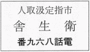

| 糞尿譚 | |
| 火野 葦平 | |
| (2015) | |
糞尿譚
火野葦平
どこかでは既に雨が降っているのか、白く光って見あげるようにむくむくともりあがった入道雲の方向で、かすかな遠雷
のとどろきがして居る。斜面を下りながら、彦太郎は、麦藁帽子
の縁に手をかけて空を見あげ、一雨来るかも知れんと思い、灼
けるように陽炎
をあげている周囲を見わたすと、心なしか、さっと、一陣の冷たい風が来て西瓜
畑の葉を鳴らした。赭土
の中にころがった大小さまざまの西瓜は埃
にまみれて禿
げたような青い色を晒
している。下りながら、両手で輪をつくり、口にあてて、おうい、と叫ぶと、小さく下に見える池の中央に入って、真裸で両手を水中につっこんでいた男が、顔をあげた。彦太郎だと知ると、下の方で背を伸ばし、伸びをして腰を叩き、こちらに笑いかけたのが遠目にもわかった。土埃をたてて斜面を駈
け下ると、惰力
で危うく池の中に飛びこみそうになったが、岸にある無花果
の樹にようやくつかまった。顔見合わせ大声立てて笑った。卯平さん、あんた、なにしとるか、と彦太郎はもう草の上に坐りこんで腰から鉈豆煙管
を取り出し、雁首
にきざみをつめながら訊
いた。びしょ濡
れになった上に額から汗が流れおちて眼に入るのを、卯平は泥だらけの手で拭
くわけに行かず、腕でずるとなでて、食用蛙を捕まえてやろうと思っているのだが、なかなか見つからんので、仕方がないから池を干そうと思って泥吐口
を抜きよったところだと云った。食用蛙が居るのか、と彦太郎はびっくりした顔で訊き返した。どうも四五日前から妙な声で鳴く奴がある。確かに食用蛙に違いないと思って探し廻ったがさっぱりわからんのだ、池の底に隠
れているに違いないと思って搔き廻してみても出て来ん、がまの穂を餌
にして釣りかかってみたが食いつかん、夜中になると嫌
な声を出して鳴きやがる、があおん、があおん、というような赤子のような声で、女房はあんな工合だし、癇
にさわってさっぱり寝つかれん、仕方がないから、こんな小さな池だし、干してやれと思って、先刻泥吐口
を抜こうと思って池の中に入ったんだが、口が赭土を咬
えこんでいるのか、なかなか栓
が動かんので骨折ったところだ、どうしても捕まえにゃ腹が癒
えん、と話しながら、卯平はまた両手を赤く濁った水の中につっこみ、息を吸いこんで顔をしかめたと見る間に、水煙をあげて池の中に沈んでしまった。しばらくぶくぶく泡
が立っているのを彦太郎はじっと見つめながら、卯平がなかなか上って来ないので少し不安になりはじめたが、すると、今まで騒いでいた水面が、波紋
をおさめじっと動かなくなった。彦太郎は急に胸がどきどきしだし、何かに引っかかって上れなくなったと思い、入って助ける気になってシャツを脱
いだ。股引
のバンドに手をかけた時、突然池の中でがぼうという大きな音がし、ごうという音といっしょに吸いつけられる勢で水が布を裂くように鳴る音が聞え、水面が渦巻きだしたまん中にぽかりと卯平の顔が出た。ぶるぶると頭を振り、があと唾
をはき、くそう、えらい骨を折らしやがった、と云って、右手に持っていた栓を岸の草の上に投げて、きょとんと立っていた彦太郎の顔を見て、声を立てて笑った。土堤
の下の方で水の抜けるはげしい音が聞え、眼に見えて水面が下りはじめた。まるで河童
じゃな、あんた、と彦太郎が云うのに答えず、卯平は鋭い目附になって注意深く池の中をあちこちと眺め廻した。脱いだシャツをまた着なおして、彦太郎も岸辺の叢
などに眼をやった。水すましが慌てたように水面を舞ったり、小さな青蛙が飛んだり、爪の赤い蟹が倉皇
として逃げたりしたが、食用蛙の姿は見えなかった。居らんぞ、あんた、と彦太郎が投げ出したように云うのに、卯平は何にもいわず、じっと池の面から眼を離さなかった。彦太郎は退屈して又草の上に腰を下したが、何気なしに横を見上げた途端、彼は飛び上らんばかりに驚いた。一間とは離れていない小屋の窓に、髪をさんばらに顔に垂らし、ぎろぎろと大きな眼を見ひらいて彼を睨みつけている白衣の女の姿があった。彦太郎は我にもなく驚愕
した自分がてれ臭くなったので、卯平に声をかけ、ごりょんさんはまださっぱりせんらしいな、と云った。卯平はようやく水面から眼を離して、窓から身体をのし出して、泣くとも怒ったともつかぬ、くずれたような表情を湛え、日頃から大きい眼が、瘦せ細ったために、飛び出したように見える瞳を据えて、歯を嚙むような声を立てて笑い出した女房に、いきなり摑んでいた泥を投げつけ、ちょうッ、と動物を追うように呶鳴
り、坐って居れ、と叫び何か大きな声でお経のような文句を云った。馬鹿、馬鹿、と女房は急に勢が抜けたように肩をすぼめ、引っこんで、暗い土間に坐りこんだらしかった。困ったもんだ、と卯平の精悍
な顔にちらと悲しげな影がすぎたが、すぐにもとの元気な顔になって、執念
深い狐
だ、今日で十日になるのにまだ出て行かん、戸まどいして女房に憑
いたりなどして阿呆狐めが、歯がゆうてならん、そこの裏の稲荷
の狐らしい、暴れて仕方がないので呪禁
して貰ったらいくらかおとなしくなった。何とも知れんことを口走ったり、何でも手あたり次第に投げたり、暴れるので危ないから、山の総円
さんに来て貰って、紙捩
で封じて貰った、総円さんは飲んだくれのようなやくざ山伏
と人はいうけれども、俺はつくづくと今度だけはえらいと思った、あまり暴れるので俺が大きな綱
でぐるぐるまきに縛
っておいたのに、どんなに頑丈
にしといても何時の間にか抜けてしまうのだ、ところが総円さんは短いかんじんより
で手足の指を繫
いで拝んだだけだが、それでもう自由がきかず、全くおとなしくなった。二三日中には必ず狐を追い出してやると総円さんも云っているから、間もなく癒
るだろう、ただ何にも食べないので、瘦せて行く一方で、それを見るのが可哀そうだ、と次第に卯平は声を落したが、急に気をとりなおすように、嬶
も因果
な奴さ、俺が道楽して居る間中苦労をさせて、とうとう赤瀬の親方にひどい迷惑をかけて、お詫
びかたがたこの山の番人みたいになったが、百姓仕事ばかりさせて碌
な目にも合わせず、揚句にゃ狐にまで取っ憑かれやがった。そう云って卯平はおかしそうに笑った。自嘲するようなその笑いは妙に空虚で、そのうそ寒い哄笑
は、いきなりがんと彦太郎の胸を叩いた。彦太郎は眼を外
らし、急にそわそわと落ちつかぬ風で、草の上から腰を上げると、まあ、ごりょんさんを大事にな、あんた、と云い捨てて、逃げるように赭土の斜面を駈け上って行った。どしたかな、彦さん、と卯平が腑
に落ちかねて、もう少し居ったら池も干上ってしまうぜ、食用蛙が捕まったら、つけ焼にでもして久しぶりに一杯やろうではないかと、卯平が後から声をかけたのが、最後の方は遠くなった耳にもう聞えなかった。西瓜畑の間を駈け抜けて、道路に出ると、彼は慌てて待たせてあった貨物自動車
の運転台に飛び乗った。運転手の沢田に急いで行くように命じ、トラックが動き出すと、ようやく安心したように坂の下を見た。卯平の姿が池の中に豆粒のように見えた。卯平が腹這いになったような恰好をして何かを押えつけているらしく見えたのは、或いはとうとう食用蛙を見つけ出したのかも知れないと彦太郎は考えたが、それより彼は可哀そうな卯平の女房の居った部屋の窓が気になって、くねくねと曲折する道路のため、見えたり隠れたりするのを、努力して探したが、もう白衣の女の姿は見えなかった。トラックは開墾地
の間を縫っている曲折の多い山道を濛々
たる土煙をあげよたよたと走った。この辺は佐原山
の頂上であって、数年前までは笹や灌木
などの密生した全くの荒蕪地
であったのである。竹の根が深く土中を縫っているために開墾には不適当とされていたのであったが、先年この地方に防空演習が行われた際、この佐原山の絶頂に高射砲陣地を作ることとなり、登山路としては幅三尺にも足りぬ道しかなかったため、工兵隊が来て数日の間に幅二間を越える立派な登山道を作った。演習が終った翌年、上海事変が勃発したが、廟行鎮
攻撃の際に戦死した肉弾三勇士は、その時の道路開墾工事に従事して居ったのであって、佐原山の頂上には立派なる三勇士の記念碑もある。この登山道の開通はこの市
にとってはまことに感謝すべきことであった。この道の開通を契機として、佐原山は公園化し、この山を中心として各方面に出る新道路が縦横に開設され、従って道路を中心として荒蕪地として放任されていた山頂の市有地がどんどんと開墾されはじめ、現在では、どの丘も、どの斜面も、畠が連なり、果樹が栽培
され、年々相当の収穫を挙げる農作地となったのである。ここからはまともに蒼茫たる玄海灘
を望むことが出来る。幾つかの島を浮かべたこの荒海は、雲と船と海鳥とをあしらって絵のごとく美しい。それ故に直接塩
をふくんだ潮風を受けるために多少の風害はあるとしても、農民達は撓
まざる努力に依って、年々、大根、芋
、葱
などの野菜類はもとより、無花果
、枇杷
、梨
、西瓜などの果物類も豊富にとれるようになったのである。これらの畠のある斜面につけられた道路を、彦太郎のトラックは疾走して行くのである。トラックに積んだ肥料桶
がごとごとぶっつかって鳴っている。二十荷
のうち半分は空であるが、半分はつまっているので、たぽたぽと時折音がする。彦太郎が卯平の所に寄ったのも、四荷ほど肥料
を廻してくれるようにと頼まれていたからであったのに、商売も忘れてしまって彦太郎は逃げ出して行くのである。嬶
も因果な奴さ、と卯平の云った言葉がぴんと胸にひびき、彼は、苦労させつづけている自分の女房と子供達のことを思い出し、今更のことではないけれども、日頃鼻柱の強い卯平が何時になくしんみりと述懐した様子が、やきがね
のごとく彼の心を弾
いたのである。今日で三月近くも彼は家に帰らない。三月前に帰った時も、村の方に肥料を売りに行った序
に立ち寄っただけで、壊れた竹垣の戸を開けて入って行くと、女房のとしのは畠で草をむしっていたが彼の姿を見ても表情を変えず、畠の横を通り過ぎて家の方へ行く彦太郎の背後から、顔も上げずに無尽
会社が来とったですよ、と一言云ったきりのろくさい手附でしきりと草をむしりつづけていた。赭
ら顔を手でこすり、彼は家の前に立ちはだかって、くすぶった軒、土のはげた壁を、ひとわたり見わたし、字の見えなくなった表札を凝視して、今に見て居れ、今に見て居れ、と呪文
のごとく呟
いた。坂田村の豪農として何代も続いた小森家は彦太郎の代になって壊滅
に瀕
して居る。鬱勃
たる事業慾を押えることが出来ず、彼は山林の一部を抵当
にして信用会社から資本の融通
を受け、糞尿汲取事業
を開始した。従来は百姓達が馬車を曳
いて市の方に出て行き、市内糞尿の汲取りをして居たが、自分達に肥料の必要でない時には中止する。市内に何人か居る商売人も全部馬車か牛車であって能率は捗々
しくない。彼は桶
及び二十荷を積めるトラックを一台購入した。汲取賃、肥料として農村へ売り捌
く収益とを合算し、近代的方法に依って市民の大半を得意に取り得るは必定であって、必要諸経費を差引いても、相当の剰余金
のあることは確実である。彼は意気揚々として、周囲の人々の冷笑の中に開業した。ところが始めてみると、彼の算盤
は片端から違算にぶっつかった。第一、営業の許可問題でごたごたした。市中にはトラックを何処にも入れることの出来ないために、桶用リヤカアを作り、汲取った桶を一定の場所に集めておいて、トラックを廻して積み込む外なく、一ヶ所ではトラックにしたことが用を為さないため、リヤカアも二つ作り、桶も八十荷作り、汲取人夫は六人もよけい雇い入れた。其の外、色々の事業の面倒な経緯
は省略するとして、彼が商売を始めてから十年間に、先祖から残されて来た山林田畠はもとより、家屋敷まで悉
く人手にわたり、あるものとては、ただ、今に見て居れ、という彦太郎の執念ばかりとなった。トラックも幾度か抵当に入り、幾度か差押えの厄
に遭った。彼がひたすら失敗と没落の道をたどって行ったのには、他の重要な原因として、彼がなかなかの酒好きであったことがひとつ、もう一つには、この地方が非常に政治的にうるさいところで、政党政派の関係があらゆる商売取引に浸潤
し、政党への顧慮
なくしてはいかなる商売も成立しなかったことが、ひとつである。彼は村にも家にも帰らなくなった。帰れなくなったことが本当かも知れない。海浜に近い野原の片隅にトラックを入れるバラック小屋を建て、その横に四畳半の一部屋をこしらえて其処に起き臥し、不自由な自炊
をした。初めはがみがみと叱言を云い、中頃には愚痴をこぼしていた女房も、この頃ではなんにも云わなくなった。村に肥料を売りに出かける時折に、家に立ち寄ってみるのであるが、何時行っても女房のとしのは畠に出ているか、藁
を打っているか、機
を織っているかして働いていた。十二になる徳次と、八つになって今年から学校に行くことになった千代子とは父が居なくとも元気に大きくなった。心からの親しみを見せない子供を淋しく思ったけれども、今に、ゆっくりと一緒に暮らすことになる日があると思い、その時こそ心行くまで楽しい生活が味わえると思った。村の誰彼が彼を目して、低能
といい、阿呆といい、お人よしといい、全く馬鹿のひとつおぼえ、「長久命
の長助」だと、嘲笑して居ることも知って居る。今に見て居れ、という言葉は彼の宗教のごとくなった。工兵隊の作った山道をトラックは古びた体軀
をがたつかせながら、下りはじめた。警戒しながら速力をゆるめると、急にさあっと冷たい風が横から頰をうったので、我に返ったように彦太郎が見あげると、亭々
と聳える杉林の上は、何時の間にか、いっぱいの黒雲に掩
われてのしかかるように暗く、同じように顔をあげた運転手と眼を見合わせ、瓢簞
のような顔の沢田が、眉をひそめて口を尖らせたが、ぽつりと、頰にひとつ、来たという沢田の声に命令されたように、さあと大粒の雨が一斉
にまっ白く降り出した。石臼をひくように遠くから起って来た雷が、いきなり頭のま上で恐ろしい音を立て、杉林にひとしきりはげしい雨の音を叩きつけた。赭土の道に豆粒をまくように穴をあけてつきささるはげしい雨脚
を眺めながら、彦太郎は、ひょっくり、吃
りの天野久太郎のことを思い出し、今夜は是非天野を説得して組合のことを協議しなければならぬ、と思った。
朝早く、車体検査のため、沢田がトラックを運転して出た後、彦太郎は油で汚
れた手を洗濯石鹼で洗って、柱に腰を下すと、昨夜残しておいた焼酎
のあったのを思い出し、細目の金網の張ったみずや
の中から一升徳利を取り出した。栓をとって覗
いてみると、半分程あるらしいので、彼は人の好さそうな笑いを浮かべ、湯呑茶碗についで、ごくんごくんと飲んだ。咽喉を透る痺
れるような気持をたしなむように眼をつぶり、右手で胸を押え、しばらくじっとしていた。食道をすぎて胃袋に入って行くのがはっきりわかり、精気がついたように身体中が膨
れて来るのを感じた。これで今日も一日元気で働けると思い、彼の苦難に満ちた四十五年の生涯が、この一杯の焼酎の中に溶けこんでしまったような、洋々とした気持になった。三杯ほど引っかけ、立ち上ると、集金帳を下げて表に出た。ぎらぎらと光る砂が彼の眼を射すくめたが、陽炎
のあがるその砂丘の向こうに、幻燈のようにまっ青な海が横たわり、防波堤
に白い飛沫
をあげて、だうんだうんと鳴っていた。彼は大きな欠伸
をして、トラック小屋の上に近頃塗りかえて揚
げた新しい看板を振り仰いだ。

純白なペンキの色が一層彦太郎を楽しくした。今度入れた市指定の三字を何度も繰り返して眺め、よしよしという風にもったいらしくうなずいた。それからトラック小屋の裏手に廻ると、大きな声で、ようい、居るか、と呼んだ。はあい、と掘立小屋の中から鈍重な返事が聞え、赤錆びたトタンの扉をめくって、長髯
をしごきながら、ひょろ長い李聖学の顔が出た。これから集金に廻るが従
いて来んか、と彦太郎がいうと、急に顔を顰
めて、どうも昨夜から腹が痛いですから、と云い、返事も待たず、馬鹿にしたような薄笑いを浮かべて、がたんとトタンの扉を下してしまった。彦太郎が舌打して、旱魃
で水量の減った唐人川
に沿うて下って行くと、背中に、掘立小屋の中で、妙な節廻
しで李聖学が朝鮮の歌を呶鳴っている声が聞えた。その間ののびた歌声は明らかに彦太郎を嘲弄
した調子を帯びていたけれども、彦太郎は一向通じない様子で、自分も釣られたように、口三味線
を入れながら、三勝半七酒屋之段
の一くだりか何かを口吟
み出した。この浮かれた気分は彼にとって彼を実に幸運な事態にみちびいた出来事が起った。彼がしまいには手で調子を取りながら唐人川の最下流にかかっている土橋をわたりかけた時である。いったいこの幅一間に足りない小川はこの市にある唯一の渓流で、佐原山の裏手に連なる笹倉山の奥に源を発しているのであるが、昔、明治初年頃、滔々
として文明開化の流れがこの一寒村にも沁
みわたって来た時、この附近にコークス工場が出来、一人の仏蘭西
人が技師としてその頃の人達が眼を廻したほど高い給金で雇われて来たが、その外国人がこの小川に砂金
が採
れるなど云い出し一時非常に騒がれたことがあった。その為に全くの海浜であったこの小川の下流にたちまち部落が出来てしまったほどである。その為昔はこの川には別の名があったのであろうが、何時の頃からか唐人川と呼ばれるようになったのである。明治初年頃には二百戸に満たない一漁村であったこの市は、鉄道の開通、築港の完成、石炭の採掘
積出
し、等によって急速に進展したのであるが、この唐人川の下流に砂金の宣伝によって出現した部落は、この発展の中心から全く置き忘れられたように、昔のままの姿であった。コークス工場も何時の間にか無くなり、その外国人も何処に行ったやら消えてしまったが、ここに残った一劃
の部落は、その後町の発展の圏外
にありながら、一つの任務を帯びるようになった。このドノゴオ・トンカは、金を採るかわりに塵芥
を取る部落となった。村は海岸に臨んで五十戸程密集し、背後の丘の上には赤煉瓦の市立塵芥焼却場
があって、百七十尺の高い煙突が聳えて薄黒い煙をはいている。海浜や道傍の到る処に塵埃
の山があり、馬車が何台も道につながれてあって、足の太い馬が毛の抜けた鬣
を振って懶
そうに嘶
いている。彦太郎が唐人川の土橋に足をかけた途端、それらの塵芥の山の一つに立っている三人の半被
姿の男が、ほれ見い、糞男
が行くぞ、生意気な奴だ、この頃、俺たちの仕事の邪魔をしようとして居やがる、とかなんとか、がやがやと話し出したと見る間に、腰をかがめて、塵芥の山から、ブリキ缶
や、釘の折れや、竹切れなどを拾って、塵の礫
を飛ばし出した。刺
のあるこれらの手榴弾
は雨霰
と彦太郎の背後に落下したけれども、そのけたたましい音を耳にしながらも、彦太郎はそれが自分を襲う敵弾だと考え及ぶには、幸にも、あまりによい機嫌になり過ぎていたのである。缶詰の殻が彼の右足に命中したにもかかわらず、彼は振りむこうともせず、今ごろは半七さん、何処にどうしてござろうぞ、と、一層調子を高めながら、悠揚
せまらず、橋をわたり、町の方へ出て行った。
集金帳を繰りながら、彼はあちこちの家に立ち寄った。大黒様のついた黄色い財布
は次第に銭で膨
れて行ったが、彼は次第に先刻からの気分を失いはじめて、だんだん憂鬱
になっていた。一ヶ月勘定
になっているので、僅かな汲取料金であるし、歩きさえすれば、すぐにでも集金は済みそうなものであったが、実際はそうではなかった。三べんも四へんも足を運ばせ、誰が居ないから判らないとか、今日は都合が悪いとか云った揚句、ようやく五度目位に、やっとくれるような家が何軒もあった。先月までは家族五人だったが、娘が一人このほど嫁に行ったから、十銭だけ引いてくれ、などといい、引かなければ他の汲取人に頼むからとすぐ云うので、仕方なしに割引したりする家も何軒かあった。汲取り方が悪くて不潔で仕方がない、あんな取り方をするなら金を払わぬ、と叱言を云い、今後注意しますからと平身低頭して陳謝すると、なおも飯時
に取りに来て貰っては困るとか、色々と口喧
しく云った揚句、今日はいかんから明後日
頃来てみてくれ、などという家もあった。一ヶ月普通三十銭、家族の多いところで五十銭位なのだが、集金のたびに出合うこういう事も、長年のことで、最初ほどむきになって腹が立ったり不愉快になったりすることはなく、馴れてしまっているのであるが、やはり、どうにも面白くなく、こんな目に合うたびに、彦太郎は何時も親切な赤瀬氏の奥さんを思い出す。赤瀬氏の奥さんはいつ汲取りに行ってもにこにこして、御苦労さん、ありがと、と云いながら、いくらかの酒代
をかならず包んでくれるのである。赤瀬春吉氏は彼の事業にとっては更生の恩人である。しかしながら、夕方近くなって、大抵一廻りすんだ頃には、例のごとく、もとの気分に返って、膨れた財布を胴巻
に入れ、少し得意を増さねばいかんと思い、心当りの家々を訪れて頼んで歩いた。歩き疲れて、日の暮れ近く、トラック小屋に帰って来ると、トラックも帰って居って、運転手の沢田がバケツに水を入れてタイヤを洗っていた。御苦労だったなあ、と声をかけると、ああと横柄
に答えて、眼鏡の下から見あげるように、今度は六ヶ月間でしたよ、うまく行きましたが、もうシリンダは取り換えた方がええですな、と口を尖らせて云った。仕方がないな、と彦太郎は答え、老齢のため何かと修繕代の嵩
む自動車を一寸怨めしそうに見たが、もとよりそれは心からの恨みでは毛頭なく寧
ろ長い間、自分と苦難を俱
にして来たために、こんなにも古ぼけた傷ましい姿になり果てたトラックへの限りない哀惜
のこころであった。彼は一寸感傷的になり、赤瀬の大将に相談してみるから、と沢田に云い捨てて小屋の裏に廻り、金本よ、トラックが帰ったから明朝は高崎町方面と学校の方へ廻ってくれ、外の者にも伝えてくれ、とトタンの扉を叩いて云った。金本というのは李聖学の日本名であった。朝鮮人は内地に来ると皆日本の名前をつけるのだ。はあい、と中から睡
そうな声が聞えた。急に腹の減ったのを思い出し、小屋に帰って来ると、框
に腰を下して、一升徳利に口をつけて、ごくんごくんと飲むと、食道を焼酎がじいんと鳴って通り、胃袋に来て胃壁
に沁みわたった。焼酎は一口しか残っていなかった。顔が火照
り始め、身体が温
もって来ると、横になったが、疲れが出て来て、沢田が自動車の掃除をすまして出て行きながら、小森さん、ガソリンも切れてますよ、と喚
いて行ったのに、返事をしたようでもあり、せんようでもあり、土間に転がったまま、眠ってしまった。やがて、歯軋
りをはじめ、があと大きな鼾
をかきはじめた。気がつくと彦太郎は小高い丘の上に天野久太郎と二人で立っている。今までは彼の商売敵
であった背の低い猿のような久太郎が、古風な山高帽を被
って彼の傍に居るのが、同じような久太郎が二人居るように見え、四人位居るようにも見え、彼はふっと気がついて、なるほど今日は汲取人組合の発会式なのだと思い出した。すると足もとからするすると旗が上り、妙に細長い白い旗が見あげる天空に翻
えった。天野久太郎は顔をあげて、くるくると丸い眼を輝かせながら、今まで、お互が無駄な競争をして居ったのは大いに間違いであった。今後は大いに協力一致、手を取り合って進もう、我々の団結に依って、横柄
な得意の人達にも思い知らせることの出来るのは愉快なことである、我々が競争し、得意を奪い合うために、段々と汲取賃が低下したことは何という馬鹿げたことであったか、かかる不潔なる仕事をしながら、安い汲取賃の支給を受け、しかも聞くに耐えぬ侮辱
を受けなければならぬ道理はない、組合が出来た以上は、も早、市民は協定以外の料金を以て、如何なる者にも汲取りを依頼することが出来ない、割引しなければ別の者に頼むという言葉を以て我々を脅迫
することは出来ない、考えれば汲取料金は月一円でも安い位である、我々が清掃に従事しなければ市民はいったいどうするつもりであるか、自分で棄
てに行くか、さもなければ、排泄
を停止するの外はないではないか、と、演説しはじめたのであったが、彦太郎はその通りであると思い、久太郎は吃音
であった筈だがとひょっくり考えたり、滔々と淀みない雄弁
をつづける久太郎の口元を不思議そうに見つめた。拍手
が起り、すると、花火があがって、何か沸々
とたぎるような音がしはじめ、眼下に見下される町の中から叫喚
の声がとどろきはじめると見る間に、町は沸
きたち、あふれ上って来た黄金の糞尿の流水の中に沈みはじめた。溺
れ、救いを求める人々の中に、彦太郎は、汲取り方が悪いから金を払わんと云った会社員の顔や、家族が減ったから十銭引きなさい、でなかったら他の者に頼むから、と云った果物屋の主婦
さんの顔や、を見た。ごうごうと音立てて溢れたつ糞尿の中に、またたくうちに町は沈没してしまい、折から上って来た太陽が黄金の上に反射して美しく輝いた。久太郎が猿のように歯をむき出して笑う声に、ひょっくりと彦太郎は眼を覚ました。まっ暗なので、彼はまだ夢を見ているのかと思ったが、手探りで電燈のスイッチを捻
ると、巨大な昆虫
のうずくまったように、緑のペンキで塗ったトラックが眼の前に浮かび上った。彼は、何故か、こみあげて来る笑いをどうしても押えることが出来ず、にやにやと唇をほぐし、とうとう腹をゆすって大声で笑い出した。
日がかげってから家を出た赤瀬春吉は、窓の外に秋を告げるような蜩
の声を聞きながら、首だけ出して、湯の中に浸
っていた。町から相当離れた海浜にある、温泉と名だけついている、この湯に、今日は誰も居なかった。波の音も聞え、松籟
の音もし、何処か山陰あたりの温泉地にでも旅したようなゆっくりと落ちついた、よい気持であった。彼は両腕を伸ばして力を入れ、狭い湯槽
の片方に背を靠
せ、足を伸してつっぱった。そういう子供らしい動作を楽しみながら、何時とはなしに謡曲の節のような声を出して唸っていると、横手の潜戸
が開いて、おせいというこの湯屋の女が顔を出して、友田さんがお見えになりました、と告げた。古ぼけた朽木
のような潜戸の間から出たおせいの顔は、額縁にはめられた肖像画のように美しかった。色は浅黒かったが、細面の顔に三日月形の眉毛がいかにも婀娜
っぽく、一重瞼
の情をふくんだ目附は、彼に錦絵
の枕草紙をすぐ思い出させ、赤瀬春吉は既にこのほどから、どうにも押えきれないおせいの幻影につきまとわれ、もうだめだと観念していたのである。おせいの声に我に返ったように一言、そうか、と答えた。先達来
、友田喜造から一度会って色々と話したいからと云われていたのを、会ったところで仕方がないと思い、色々口実を設けて外
していたのだが、是非ともと、うるさいほどの催促が来るので、それではと、赤瀬の方から、この場所を指定したのである。もとより赤瀬はおせいが居たためであって、市中から相当離れたこんな辺鄙
な処なら、億劫
がって友田も出ては来ないだろうと考えていたのである。ところが、友田は約束通りやって来たらしい。来ないことの方を、おせいを見た時から一層希望して居たのに、のこのこ出て来るとはよくよくの事に違いないと思い、喧嘩
はしないことにしよう、と考えて居ると、また潜戸が開いて、やあ、と真裸になった友田喜造が手拭をぶら下げて入って来た。無造作に股間
を濡らすと、とぼんと跳
ねるように湯槽に飛びこんだ。狭い浴槽
の縁を越えて白っぽい湯水が溢れた。遅うなりました、と友田は改まったように挨拶した。こうして、一間四方の湯槽の中で、両派を代表する親分と云われる二人の男は無造作のごとく対峙
したのである。鳶
のように光る瞳をみはって、よい身体ですな、だいぶんありましょう、と瘦せぎすの友田が手拭で首筋を洗いながら云った。最近体重器
にかかりませんが、正月頃用件で郷里の広島に帰った時には二十三貫ありました、図体
ばかりで恥かしい次第ですよ、と赤瀬が云うのに、いや、羨しいことです、我々のは恥かしくて何貫目ありますなどと人様には云えませんよ、たいてい贅沢もし甘味
しいものも食べてみるんだが、性
でしょう、一向効果がありません。そう云って両手を差上げたが、両肩から手首近くまで、自来也
の彫青
があるのが、濡れているせいであろうか、巻物を咬
えた蝦蟇
の眼玉がぎろぎろと動いて赤瀬を睨んだように見えた。赤瀬も太った左腕をあげて、渦を巻いている竜の顔の上をなでながら、お互若気のいたりと云いながら、馬鹿なことをしたものですよ、親から貰った身体を汚
してしまって今更取り返しのつく話ではないが、時世の変ったこの頃では気恥かしくてうかうかとは裸にもなれない始末です。その通りです、赤瀬さん、あなたのは片腕だけでなんぼかましですが、あたしは全身なので、若い頃にはそうでもなかったが、年とったこの頃では寒い頃には身体を締
めつけられているようでやりきれません、風邪でも引いたりすると、ずきずきと痛むようなこともあります、痛い目を我慢して若い頃というものはお互無茶をしたものですな、もっともあの頃はこれで威
しもきいたし、賭場
にはぐりつけ
に行っても、この刺青
が長脇差
の代りになったような事も、あるにはあったのですよ、はははは、とおかしくもなさそうに笑った。赤瀬も苦笑したが、そこで話が途切れて二人は云い合わせたように窓の外に眼をやったが、腰硝子越しに、芋畑が見えて、広い芋の葉が風をうけて、団扇
をふるようにかさかさと鳴って動いていた。ところで、友田は別に大したことではないと云った表情で、小さい眼をくりくりさせ、この間からお話ししたいと思っていたというのは、外
でもありませんが、あなたに是非とも民政党
に入党して貰いたいのです。赤瀬が首だけ出したまま、芋畑の方を見て返事をしないので、実はこのことはあたしとしてもどうしてもそうして貰いたいと思っているのですが、また、大親分の豊島氏の非常な希望でもあるのです、現在ではこの町では我党でなければ人でないと云う風に云われていることは、もとより、あなたもよく承知のこととは思いますが、打ちあければ、何分にも多数を以てたいていの事は押し切って行きますが、ほんとうに筋道立てた議論を吐く押しの利
く人物というものがあまり居りませんし、あなたの属している中立や政友会などの党派には些
かも驚きませんが、お世辞を云うわけでは決してないから誤解されると困りますが、あなた個人の力だけが、我々にとって少しばかり恐ろしいのです、どうでしょう、この町では昔から代議士の豊島大親分が居る間は、いかに政友会や中立がじたばたしても、金輪際
、うだつ
の上るためしのないことは見えすいていますが、この際、思い切って民政党に入党してはどうでしょうか、あなたが民政党に入党してくれれば、実に鬼に金棒
でありまして、もとより、あなたを平
の党員では決しておきません、これは既に内定していることでありまして、幹事長になって貰い、次回の県会議員の候補には是非あなたに出ていただくつもりであります。この五月の市会議員の選挙に最高点で出られたあなたの潜在力には全く驚いて居ります、しかし我党が十八名候補者を立て、悉く当選したことも大いに誇るに足ると思って居ります、一考して下さいませんか。ぽつりぽつりと話す友田の言葉が切れると、赤瀬はなおも表の芋畑に眼をやったまま、趣旨はよくわかりました、わたくしごときものにまことに過分の言葉であります、然しながら、わたくしはいつも申しあげますように、憲政
の大道として、中央政治はやむを得ませんが、地方自治体に於ては政党の必要なしというのがわたくしの持論でありまして、現在、当市にありましても、この政党関係のためにいかなる弊害
を被
って居るかということは今更ここで例をあげて申しあげるまでもなく、演説会やその他で長年の間わたくしが、いや、わたくしではありませんでした、市民識者の輿論
が実情を指摘して居るところであります、なるほど豊島氏はえらい方であると敬服して居ります、しかしながら、豊島氏の率いる、というより豊島氏をいただく民政党というものが、当市において勢力を有し、何事も左右し、多くの場合党利
党略
に終始して、市民の福利をかえりみないことはまことに遺憾に思っているのであります、さきほど、十八名が全部当選したというお話がありましたが、それらの人々は常日頃から人々に爪弾
きにされて居った人たちが多いのに、どうして普通で当選が出来ましょう。悉く買収によったことは、わたくしが申しあげるまでもないことであります、不肖何ごともわきまえないわたくしが市民諸君の推薦
によって市会議員に出ました以上は、わたくしも男でありますから、なるほど大きな傘の下に居れば雨には濡れないかも知れませんが、正しいと思うことのために進みたいのであります、多くは申しませぬから、以上のこと御諒承下され、豊島氏によしなにお答え下さるよう、お願いいたします。よく、わかりました、あなたの決意のほどを諒承し、ふたたび繰り返しません、お互の正しいと考えた立場に立ち、たたかう外はありません、失礼いたしました。そうして二人はようやく云い合わしたように芋の葉から眼を離して、顔見合わせた。二人の眸
には何かしら殺気のようなものがあったが、友田は手拭でぶるぶると顔を洗い、話は別ですが、今度、参事会で、市営建造物の糞尿汲取を小森彦太郎という者の名義になって居る衛生舎に指定されたことについては、あたしは丁度親族の不幸のために欠席して知りませんでしたが、あなたが非常に尽力
されたということですが、ほんとうですか、と訊いた。わたくしが特に衛生舎のために尽力したというわけではありませんが、市の予算も少ないし、従来やって居った太田というものが欠損つづきでどうしてもやれないと云って居った時であるし、衛生舎はトラックを持っているというので、参事会で意見が一致し、市の指定ということになったわけであります、市営建造物というのは、御承知のごとく、小学校が六ヶ所、共同便所が四ヶ所、海員児童ホーム、公会堂、市役所、教員住宅、等、三十ヶ所に及び、普通の牛車や馬車ではどうしても汲取能率があがらず、トラックのある衛生舎が、と云いかけるのを途中からとって、あれはあなたの事業ですかと友田はまた横をむいて云った。わたくしは何にも知らないのです、あれは、と云いかけるのを、また、小森彦太郎にはあなたが金を出してやったそうではありませんか、と云った。いや、あれはなんでも、昨年頃、小森が無尽会社の借金の抵当にトラックをとられて、商売が出来ず泣きそうに弱っていたのを、わたくしの家内が可哀そうに思って、金を貸してやったそうでありますが、わたくしは後で聞いて知った位で、もとより小森の事業にはなんの関係もありませんよ。そうですか、あの男はあたしがだいぶん世話を焼いてやった男なのですが、いや、よくわかりました、あまり長湯をしたので、少しのぼせ気味になって来たようです、これはラジウム鉱泉などと云って居りますが、どんなもんですかな、と云いながら、友田は立ち上って伸びをし、浴槽から出た。彼は窓に向かって赤瀬に背中を見せ、秋ですなあ、と云った。芋畑には真横から西日があたり、芋の葉が土の上に長い影を落していた。八岐大蛇
の八つの首が大きな口をあけて素戔嗚命
に集中し、命
は赤い血溝
のついた剣を振りあげているが、その赤い血溝のある長い剣を見ながら、この男はいつか誰かに殺されるに違いないと、赤瀬は何故ともなくそう思った。表を見ながら、近ごろはよい賭博
でも出来ますか、と友田が云うのに、浴槽の中から、いや、賭博はやめましたよ、と赤瀬が答えると、失礼しました、と友田は静かな口調で云ったが、潜戸を開けて出て行った。潜戸はいきなりぱあんとはげしい音を立てて閉
まった。それは古ぼけた縁の釘が飛んだほどの烈
しさであった。浴槽の中の赤瀬が苦笑を浮かべていると、潜戸が開いて、どうかなされましたか、と、おせいの顔が出て云った。美しい女だ、と思い、なあに、なんでもないよ、友田さんが帰ったら出るから、鱸
の背ごしでもこしらえて、酒の支度でもしといておくれ、久しぶりでいい気持になった、今日はゆっくりして行こう、と云った。
市内に於ける糞尿汲取人組合の結成のことで、毎回集まる者の少ないため、何十回も集会がお流れになっていたが、今夜は彦太郎が一杯買うからと云ったのに釣られたのか、六人のうち四人の顔が揃った。あとは隈井
というのと天野久太郎が来さえすれば全部揃うのであった。彦太郎は無い懐
をはたいて大英断をやった。今夜少々金を使っても組合さえ出来れば取り返しはつくと思うのだ。かき舟の一番奥の座敷で、鍋の中にかしわが沸々
とたぎり、既に盃も相当に右往左往したあとで、誰も赤い顔をして、声も大きくなって居た。顔の大きな年増の芸者が一人、癇
高い声で間断なく喋舌
っていた。組合などのことはまるきり興味のなさそうな同業者達に、口を酸
っぱくして彦太郎は、組合の必要なことを説き、どうにかこうにか、そういうことなれば作ってもよいという空気にまで漕ぎつけたのだが、彼等は今までお互に得意の争奪
をやって来た手前、お互の顔を盗むようにちらちらと見やっては、猜疑
深い表情を消さなかった。酔が廻るにつれて彦太郎は自分の説得が効果を現わしたことで嬉しくなり、さあ、みんな、愉快に飲もうじゃないか、土方
の喧嘩で頭割りなどと、後から決して云いはせんから、どんどん飲んで貰いたい、間もなく隈井さんも天野さんも来るだろう、天野さんが賛成であることはわしが太鼓判
を押しておく、こないだ面白い夢を見た、まあ、聞いておくれ、あんた、と先夜見た夢の話をし、あれは正夢
に違わん、わしの考えて居ると同じことを天野さんが云って居った、隈井さんには聞いてみなければわからないが、外の者全部が作ろうというものを、隈井さん一人で反対はせんに違いない、どうだ、芸者さん、これからは肥料
取賃を女に限り倍にするぞ、どうも男よりは女は汚のうていかん、月のもんでもある時にはうんざりするぞ、と云って盃をかかえたまま愉快そうに笑った。なに云うてんのや、男さんの方がよっぽど汚ない、と云ったが顔まけしたかたちで、あんたたち、始めからしまいまでうんこの話ばかりして、御馳走の味おまっか、と云って笑った。うまいうまい、と白髪を垂らした吉村長吉が、赤い鼻の頭をぽりぽり搔きながら、金蠅
まで話を嗅
ぎつけやって来たぞ、と云った。酔が廻るにつれて次第に打ち解けた空気になり、歌も出、朝鮮人の同業者が二人居たが、それも、何やら奇妙な節廻しで、朝鮮の歌を呶鳴り出した。ああ、そいつは知ってるぞ、と彦太郎は大声を発し、わしのところの金本や大山達がよく酒を飲んではやって居る、チン、チンチンナアレ、チョッタ、チョッタ、というのだろう、やれやれ、チン、チンチンナアレ、チヨッタ、チョッタ、とうたい出すと、朝鮮人達も手を打って和
した。駄目よ、そんな外国の歌、日本の歌をうたいなさいよ、と芸者が云ってそれでもいい加減に三味線を鳴らして合わせているところへ、襖
が開いて、背の低い、ずんぐりした印度人のような天野久太郎が入って来た。天野は空
いている座蒲団
の上に落ちるように坐ると、ものをいう前の癖
で、ぐうと息を吸いこんで、眼を白黒させ、お、お、お、遅くなった、す、す、すまん、とだけ云った。やあ、よう来てくれたな、あんた待って居ったが遅いので始めたところだ、さあ、一杯、と盃をさし、自分で徳利を持って注
ぎながら、この組合のことでは随分長い間骨を折った、でも、今日は嬉しゅうてこたえん、あんたとも何べんも話したことだが今まで、お互が無駄な競争をして居ったのは大いに間違いであった、今後は大いに協力一致、手をとりあって進もう、我々の団結によって横柄な得意の人達にも思い知らせることの出来るのは愉快なことである、我々が競争し得意を奪うために、だんだんと汲取賃が低下したことは何という馬鹿げたことであったか、かかる不潔なる仕事をしながら、安い汲取賃の支給を受け、しかも聞くに堪えぬ侮辱を受ける道理はない、組合が出来た以上は、も早、市民は協定以外の料金を以て、如何なる者にも汲取りを依頼することが出来ない、割引きしなければ別の者に頼むという言葉を以て、我々を脅迫
することは出来ない、考えれば汲取料金は月一円でも安い位である、我々が清掃に従事しなければ市民は一体どうするつもりであるか、自分で棄てに行くか、さもなければ、排泄
を停止するの外はないではないか、と、これはどこかで誰かから聞いたような文句だと思いながら、興奮して一気にまくし立てた。彦太郎の演説の間、ひとりで盃を何杯も重ねていた天野は、ぐっと酒を呑
みこみ、胸を反
らせ、息を吸いこんで眼を白黒させると、わ、わ、わしは、く、く、く、く、組合は、は、は、反対だ、と云った。いい気になっていた彦太郎は愕然
として、どうしてな、あんた、どうして、組合には反対か、あんた、と意気ごんで訊
ねた。天野は猿のような顔ににやりと薄笑いを浮かべて、傲然
と、わ、わ、わ、わしも、ト、ト、ト、トラックを、か、か、買うことにした、く、く、く、組合なぞ、わ、わ、わしは、か、か、か、かたらん、と云って立ち上り、兵隊のように歩調をとって出て行った。呆気
にとられて彦太郎がぼんやりしていると、お邪魔でした、とか、失礼しました、とか、口々に逃げ口上を述べて、みんな、そそくさと立ち上り、先を争うようにして出てしまった。まるきり颱風
が一過したに外ならなかった。散乱している餉台
の上を眺め、彦太郎はしばらく茫然
として、なんのことやらわからなかった。ようやく少しずつ事態がはっきりして来ると、手に持ったままにしていた空の盃を置き、うつむいてためいきをついたが、やがて思いなおしたように顔をあげ、やれやれ、なんのことだ、もとの杢阿弥
か、と呟
いて、棄鉢
のように声を立てて笑った。芸者も取りなしようがなく、徳利をとって、おあけなさいよ、とだけ云った。うん、ありがとう、あんた、もう酒の味もせんわな、と彦太郎は答えたが、急に気をとりなおしたように、馬鹿たれ共が、もうあんな奴等相手にしたって仕方がない、ああ、飲みなおそう、と冷たくなった盃をぐっと乾し、いっぱい、芸者にさした。ふと、先刻天野の云った言葉が胸に浮かび、天野はトラックを買うことにしたと云ったようであったが、天野にそれだけの余裕があるとは全然考えられず、トラックはもとより、最近一層騰貴
した諸材料のことなどに考え及び、あいつ、法螺
を吹いたのかと考え、どうも変だ、おかしい、おかしい、と呟いた。ほんとにおかしな人達やわ、と芸者は話の緒口
を見つけたように、あんな変な人達と色んな話をするなんて骨が折れますな、と取りなし顔に云った。ほんとうだよ、あんた、と、もう彦太郎は機嫌をなおし、あんな糞たれ共、勝手にしやがれ、わしも男だ、一人でやってみせる、負けるものか、とぐいぐいと続けさまに盃を空けた。芸者に三味線を弾
かせて、なかなか渋い声で、びんほつ
などをうたい、女にもうたわせ、往年の蕩児
はすっかりよい気持になって時間を過したが、下でラジオが九時半の時報を報じている音を聞いて、我に返ったように、勘定を命じた。二十四円何がしの計算書を見た刹那には、ちょっといまいましそうに舌打したが、芸者にも一円の祝儀をやり、仲居にも一円やり、芸者が送って行こうというのを断って、そこを出た。
町はまだ明かるく人通りが繁かった。鈴蘭燈
の強烈なネオンが眼にちかちかと刺すように感じ、彦太郎は蹣跚
たる足どりで、人混を縫いながら、劇場のある横町に入りこんで来て、弥次郎兵衛
というおでん屋に入った。さっと天井にとりつけた扇風機
の風が彼の顔をあおった。朱塗の台に肱
をついて腰を下すと、奥の方にある卓をとりかこんだ五人連を見やったが、凡その見当をつけて来た彦太郎のかんは見事に的中した。このおでん屋は天野の行きつけということを知って居たし、ここに来れば何か秘密を解く鍵
にぶっつかるかも知れないと思って、時間を見はからって寄ったのだが、彼が縄暖簾
を排して入ると、片隅で大声を立てて笑いながら高話をしていたのが、ぴたりと鳴りやんだ。こちらに背をむけて、中央の禿げ上った平べったい頭を振って居ったのは、確かに吃りの天野久太郎で、先刻までかき舟に一緒に居ったのが、金京善と吉村長吉と二人、欠席して顔を出さなかった角刈頭
の隈井運平、それに、正面に見えた顔は、選挙の度に何時も顔を合わせる、皆田という頭のきれいに禿げた金物屋の親爺
であった、鳴りを鎮
めた五人は、急にひそひそと何か顔つき合わせて囁
いて居ったが、姐
さん、ごあいそ
、と皆田老人が云って、金を払い、まっ先に天野が出て行き、続いて一人ずつ出て行って、皆田老人一人残った。皆田老人は立ち上って、彦太郎の隣に腰を下し、やあ、小森さん、珍しいな、五月の選挙以来初めてですな、商売忙しいでしょう、と猫撫声
を出し、ああ、皆田さん、あんたも達者で何よりで、と彦太郎も応じて、むかつく気持を押えかねながら、顔は笑顔になって、会釈
した。ところで、小森さん、君は民政党を脱退したということを聞いたがほんとうですかな、と皆田は狐のような表情になり、彦太郎の顔を覗
きこんだ。いや、わしはもう政党なんかに関係して居るのが、嫌になったのですよ、民政党だけでなしに、二度とどんな政党にも関係しませんよ、あんた、と、答えると、ははははは、と何がおかしいのか、歯のない口をあけて笑って、君は赤瀬の児分になったのでしょう、そうでしょう、と詰問
するように云った。そんなことはないですよ、と云うのを途中からとって、まあ、そんなことはどうでもよいですたい、君が君の事業を大切にすることは当り前ですからな、しかし、人の仕事にまでけちをつけるようなことはして貰わんがよいですな。彦太郎は一寸その意味がわからなかったので、まじまじと皆田老人を見つめたが、薄ぺらな唇を見つめ、汚れた額を見つめているうちに、ようやく、皆田老人が、唐人川の土橋の向こうにあるドノゴオ・トンカの住民であることを思い出したのである。この砂金の夢によって出現した部落の人達の事業としての塵芥取りは、市予算経常部の中に汚物
掃除費の中、汚物搬出馬車請負賃
として計上されて、指定掃除人ということになっているのである。同じく、市の汚物掃除費のうちに含まれている糞尿汲取請負賃と並んでいるので、従来、その金額のことが、色々な政治的な意義を含めて対照され、比較され、何かと引き合に出され、つまり、糞尿汲取請負賃に比較し、汚物搬出馬車賃が格段の多額であるということが、常に論争されて来たのである。汚物搬出の方は何等問題が起らないに反し、糞尿汲取の方は常に問題を起し、市指定の汲取人は既に何人か更迭
し、長続きがせず、遂にトラックを有して居ることのために衛生舎に指定されたわけである。露骨に云えば、糞尿汲取を増額しなければ、塵芥搬出の方を減額しろということになるので、そこに相剋
があったわけである。そういう意味だと、ようやく、彦太郎は皆田老人の云った言葉を理解し、いやいや、あんた、わしは人の仕事の邪魔などしませんよ、と答え、人の好い微笑を湛
えて、飲みませんか、と錫
かんをさした。それを受け取って、小女に注がせながら、小森さん、君は民政党に楯
ついて、碌なことはないよ、と云って、馬鹿にしたような、脅迫するような、獲物
を前にして舌なめずりするような、下卑
た薄笑いを湛えて、じっと彦太郎を見た。どぎまぎし、ひょっくり、皆田は友田喜造の腹心の者だったことに思いいたり、背後に友田の鳶
のような凄い眼附を感じて、途方に暮れた気持になったが、ようやく、気をとりなおし、自分の事業だけはどんなことがあっても守らねばならぬと思った。なおもへんにからんで来る皆田を残し、金を払って、逃げるように夜の中に出た。彼が生涯を賭して来た事業をおびやかす者が背後に迫ったような不安な気持の中で、彼の事業に対する限りない愛著が沸々
と湧きいでた。混迷して来る気持を整理することが出来ず、すたすたと足を早め、煙につつまれたような気持で歩いているうちに、ごたごたとした多くの想念の中から、抜け出るように、今に見て居れ、という一つの言葉だけが、火玉のように彼の身内に飛びあがって来た。
秋風が立ち始めた或る日であった。もう夜が明けた頃と思うのに何時までも外が明かるくならないので、表の戸を開けてみると、今にも一雨来そうに空が暗かった。南風が冷たく顔を撫で、拭
いたように南の空が覗いているので、雨にはならず間もなく晴れると思った。昨日、海員児童ホームと山手小学校との便所が溜
って流れるほどになっているからと、市役所から喧しく云って来て居ったので、今日はどうしても汲取りに行かねばならない。実は、市指定になってから、これまで指定汲取人がどうしても長続きせず、投げ出しては代り、投げ出しては新たに指定人が出来していた事情が次第にわかって来て、この頃では彦太郎自身少々うんざりして居るのである。結局は汲取請負業が少額であるためであるが、時折、市役所に行く度に、衛生課長の杉山氏に愚痴を述べ立ててみるのだが、気の毒だが予算がないので何ともならない、出来なければやめて貰う外はない、の一点張りで、埒
が開
かない。それはしかし無理ではありませんが、実費にも満たない金額でどうして三十ヶ所もある市の建造物の汲取りが出来ますか、と哀願するように云っても、杉山氏は、煙突のようにつぎつぎに煙草を吹かし、しょぼしょぼした眼を眼鏡の中から光らせながら、汲取った糞尿は田舎に売りに行けば肥料になるではないか、それが相当の収入になる、引き合わぬことはない筈だ、いくら愚図愚図
云ったところでどうにもならんと云ったらならんのだから、と最後
には、焦立
たしそうに卓を叩いて、文句があるなら市長に云いたまえ、と云うのであった。まさか市長に云う訳にも行かず、その儘
帰って来るのだが、買収問題さえなかったら、いっそ投げ出してしまいたい位なのである。最近、市に於ける諸事業の統制問題が著々
として実行に移り、従来民間経営であった色々の事業、たとえば渡船、海水浴場、電燈、等が逐次
市営となり、最近では市内バス市営買収が行われた。こわれかかった四台の旧式な自動車に依って経営されていた市内バス会社は六万円で買収され、銀色に塗った新しい乗合自動車に変って、市内を通還
した。糞尿汲取事業も早晩市営となるべき性質のものである、ということを彦太郎は考え、いよいよ相当の金額に依って権利が買収される時こそ、今に見て居れ、と寝ても覚めても忘れない復讐の成就される時である、と思い、彼はその希望のために、生き生きと活気づくのである。今までの苦労が決して無駄でなかったと思い、その時のことを考え始めると、妙に胸がせまって来て、涙のにじむ思いがするのであった。最後の勝利を得るまで、少々うんざりはするけれども、難渋な市の汲取りをやって行かねばならぬ、どんなことがあっても投げ出されぬ、と思うのだ。そう思いながら、三十ヶ所を越える市営建造物の清掃を遅滞
なく行うことはなかなか容易なことではなかった。毎度、喧しく云われ通しであった。看板には電話番号など麗々
しく書きこんではいるが、実は二十間ばかり離れた諸式屋の電話であって、そこの主人とは古い交際であったが、その男は副業に保険の勧誘
か何かやって居るので、殆ど留守勝であり、きんきんと硝子をこするような声を出すおかみさんが、電話のかかるたびに門口に呼んでくれるのだが、初めのうちこそ、亭主と彦太郎の交際の関係もあり、又、たいていの買物はそこでするので、嫌な顔もせず知らせてくれたのだが、彼も留守が多いし、聞いておいて、帰ってから知らせに来てくれることが度々で、そのうえ、かかって来る電話が、半分以上は、何故早く汲取りに来てくれぬか、とか、便所から溢れ出て臭くって仕方がない、とか、いうような電話ばかりなので、この頃では、おかみさんは露骨に嫌な顔を見せ出し、海員児童ホームからかかって来た、ことづけの電話を知らせに来てくれた時には、出がけに、電話のひとつ位取んなさいよ、と歯がゆそうに云った。少し位の雨なら、海員児童ホームだけでも汲取って置かねばならぬと思い、例の如く、彦太郎は一升徳利から湯呑茶碗に焼酎を注いで飲んだ。表の戸を開け、裏の水道傍に廻って、米をといだ。釜を瓦斯
にかけ、味噌汁
をこしらえて、表に出た。唐人川の水が暗い空をうつし、泥溝
のように淀んで流れている。板片や、草などを流している水面を見ていると、突然、わっと、尻をつかれて危うく川の中に落ちそうになり、びっくりして振り返った。後に、十二三の、鼻を垂らした見たことのない少年が立っていた。何をするか、危ないじゃないか、と彦太郎が云うと、小父さん、何か面白いお話をしておくれよ、俺
わざわざ聞きに来たんだ、と云った。焼酎で赤くなった顔に倏忽
として満足げな微笑を浮かべ、彦太郎は、そうか、誰から聞いた、あんた、と訊
ねた。小父さんはたいそう話が上手って聞いたんだよ、話しておくれよ、と少年は馴々
しく云って、川辺の上にべたんと坐ったので、ああ、よいとも、と云って彦太郎も草の上に腰を下し、足を伸ばした。なんのお話をしようかな、ああ、長久命の長助の話をしよう、昔、昔、あるところに一人の腕白小僧
が居った、ある日近所の子供と戦
ごっこをしていたが、竹の棒で一人の子供の頭に、大きなたん瘤
をこしらえた、いたいいたいと子供は泣き出した、子供のお父つぁんが頭に湯気を立てて怒って来た、そこで腕白小僧のお母さんが腕白小僧を呼びつけて、叱り出した、ところが腕白小僧は途方もない長い名前だった、お母さんは叱りだした、これ、寿限無寿限無
五光の摺
りきれず海砂利水魚水魚末雲来末風来末食来寝るところに住むところや油小路藪小路
ぱいぽぱいぽぱいぽのしゅうりん丸しゅうりん丸しゅうりん丸のぐうりんだいのぽんぽこぴいぽんぽこなの長久命の長助や、お前はどうしてそんなに悪戯
するかえ、人様の頭にたん瘤などこしらえるのかえ、ほれ、この人の頭を見なさいとお母さんは云って、打たれた子供の頭を見たところが、あんまり名前が長いので、名前を云ってしまわんうちに、瘤は引っこんでしまって居った、あはははは、面白いだろう。彦太郎は面白そうに笑ったが、少年は一向おかしくもなさそうな顔をして、今度は長久命の長助が井戸に落ちこんで、引っ張りあげて、医者を呼んで、お母さんが耳元に口を当て、長い名前を呼び出したら、医者が、まだお経は早よござると云った、と云うのだろう、なんだ、そんな話、外のことはなんにも知らねんだろ、と少年は早口に喋舌
ったかと思うと、いいッと歯をむき出して赤んべをし、呆気にとられて居る彦太郎を残して、一散に川岸に沿って、上流の方へ駈け去ってしまった。見えなくなるまで見送り、彦太郎はやっと我に返り、これはいったい何事だろうと小首を傾け、沸々
と釜のふいている音を聞いて立ち上った。狐につままれたようにトラック小屋の方に来ると、緑色のトラックの箱に、白墨
で何やら書いてあるのが眼に入った。あんなところに何にも書いてなかった筈だと思い、近づいてみると、打釘のような曲った片仮名が横につらねてあった。
バ
カ
ノ
ヒ
ト
ツ
オ
ボ
エ
子供までが自分を馬鹿にすると思い、瓦斯のところに来て釜の蓋をとった。釜を下すと代りに味噌汁の鍋をかけ框
に腰を下して、鉈豆煙管を取り出してきざみをつめながら、なるほど馬鹿のひとつおぼえかも知れぬと思うと、我ながらおかしくなって来た。幼い頃、話し好きな母から色々な昔話をたくさん聞かされたが、その中で、不思議に、この長久命の長助の話だけが彼の記憶に残った。あとの話はみんな忘れた、彼は誰でもがどうしても憶
えきれないこの長い名前をよく暗記した。そこで、彼は人が彼を低能などと罵
ることがあっても、自分は決して頭が悪くないと自負した。彼は何時何処ででも、いくら酒に酔っていても、この長い名前を、一言一句の間違いもなく、何回でも繰り返すことが出来た。煙草の煙を輪に吹き、もういっぺん長久命の長助の名前を早口で云ってみて、それから飯を食べはじめた。
八時に運転手の沢田が来る筈になっていたのに、八時半になっても来る様子がなかった。トラック小屋の裏に廻り、トタンの扉を叩いて、金本、居るかと、云うと、はあい、睡
そうな声がしたが、出て来る気配がないので、扉を開けると、李聖学は、立て膝で坐りこんだ女房とさし向かいで、朝鮮将棋をやっていた。飯台の上に筋
を引いて、黒い駒
をあっちに動かし、こっちに飛ばしている。まだ、出んのか、早う行ってくれねば困るじゃないか、今日はどうしても山手小学校と海員児童ホームだけは取っておかねばいかん、もう出たかと思って居ったのに、どもならんじゃないか、と不足がましく彦太郎が云うと、今日は雨てすから、ためてす、と振りむきもせず答えた。雨は降りはせん、いや、少し位降っても今日は是非取っとかにゃいかん、すぐ出てくれ、とせき立てたが、返事もせず、悠然と左手で長髯をしごき、立ち上る気色
もなかった。むかついて来るのを押え、なあ出てくれよ、と彦太郎が機嫌をとるように云うと、ようやく振り返って、旦那
さん、わしはこの仕事
やめようかと思うて居るてす、と云った。彦太郎はおどろいて、どうしたのだ、何かわけでもあるのか、と訊
いた。別にわけということはないてすが、こんな汚ない仕事
して、あんまりお金安いてすから、と云い捨て、李聖学はまた将棋の方に眼をやって、駒
を一つ動かした。最近、世間は多少景気を持ちなおして、人夫の不足を来す傾向を示し出したので、労働者は何処に行っても一日相当の賃銀
になるのであった。そういう意味のことが李聖学の態度に観取
された。今やめられて新たに雇い入れることは先ず至難
であるので、彦太郎は狼狽
した面持で、そんなことなら相談してくれたらよいじゃないか、長年いっしょに仕事をして来て、今更やめるなどということは水臭い、そんなら賃銀を上げたら働いてくれるのだな、それは易いことだ、今日から三十銭増にしよう、と慌てたように云った。李聖学は返事をしなかったが、やがて将棋をかき集めて、竹筒の中に入れ、しぶしぶと、大儀
そうに立ち上った。仕事着に着換えはじめたので、彦太郎はようやく安心し、みんなにもそう云って海員児童ホームの方から先に廻ってくれ、と念を押して、トラック小屋に帰って来た。一般に労働賃銀が一日八十銭位になっている折とて、止むを得ないと思った。不景気の折に一円三十銭で雇い入れた儘
であり、人間も多少は入れかわったが、最初は六人居ったが、収支が償
わず、現在では四人居るのだが、一人だけ上げるわけには行かないから、四人共に上げるとすれば、一日一円二十銭増額となり、休みの日を引いても、一ヶ月には三十円からの予算が狂って来ることになる。現在でも算盤
が持てず、月末計算には赤字のことが多いのに、これは大変なことになったと思った。仕方がないから、不自由ではあるが一人断るより外はあるまいと思ったりした。李聖学が表を通り、旦那
さん、行って来ます、と云って去ったあと、小屋の壁にかけた六角時計が九時を打ったのに、運転手はやって来なかった。彦太郎は角の諸式屋に来て、恰度主人が居ったので、店の自転車を借り、二町程離れた唐人川の上流の沢田の家に飛ばした。十分もすると、自転車に乗った彦太郎が同じ道を引っ返して来た。彼は非常に不機嫌な顔をしていた。彼は沢田の給料を上げて来たのだ。みんな話し合いの上だったと気がついたのだが、彼は自分の事業の崩壊
することを何より恐れ、彼等の言い分を悉く入れたが、なに、今しばらくの辛抱だと思った。自転車を返し、トラック小屋に帰って来ると、焼酎をまた湯呑茶碗に一杯飲んだ。暗かった空は次第に南の空から晴れて来て、外は明かるくなった。しばらく茫然としたように坐っていると、すみませんでした、と声をかけて勢よく沢田がやって来た。ああ、と彦太郎が放心したように答えると、なんだ、こりゃ、誰がこんないたずら書をしやがったか、と、トラックの文字を読みかけたが、ふと声をひっこめ、くすりと笑って、なに、エボオツトヒノカバと反対から読んで、なんのことか、子供が習字の稽古でもしたんだろう、仕様がない、と口を尖らせ、一人でぶつぶつ云いながら、雑巾
を濡らして拭いた。きれいに拭きとってしまうと、急に、小森さん、ほんとうにすまんと思います、と細々とした口調で云った。彦太郎がおどろいて沢田を見ると、沢田は雑巾を摑んだまま、うつむき加減で、長い間お世話になっていて、今度のような無理を云いたくなかったけれども、私も子供が三人も居るし、近頃のような物価騰貴
では、どうにもやって行けなくなったので、すまんと思いながら、あんなことを申しました、ありがとうございました、これから一生懸命に働いてお加勢
をします、と云った。彦太郎は沢田の何時にないしんみりした口調に、なんとなく次第に胸が迫り、いや、いいんだよ、あんた、わしも、この頃のような物価騰貴では皆も困って居るだろうから、あげてやらねばいけないと思って居った矢先だったのだ、と心にもないことを云った。沢田は運転手台に上ると、ぶるぶると、エンジンをかけ、トラックは老いぼれた車体をゆすぶり、青い煙を尻からはいて、小屋を出た。さあ、お乗んなさい、と沢田は彦太郎を促した。彦太郎はトラック小屋の戸を閉め、錠前を下し、運転手台に乗った。昨夜電話があって、何か用事があるそうだから、赤組の大将のところに寄って下してくれ、と彦太郎は云った。トラック小屋の前で一廻転すると、若々しい緑のペンキで塗られたトラックはよたよたと車体をくねらせ、唐人川に沿うて疾走しはじめた。赤瀬春吉の家の前まで来ると、トラックを止め、彦太郎が下りると、海員児童ホームが先ですね、と沢田は訊いて、彦太郎が頷
くと、トラックは青い煙を残して行ってしまった。
お早うございます、と勝手口の方から入って行くと、台所で胡瓜
の皮をむいていたでぶでぶの女中が、小森さん、今日はあんまり臭くないねえ、と云って笑った。冗談云いなさんな、と彦太郎も笑って、大将は、と訊いた。女中に教えられて離れ座敷の方へ庭伝いに行くと、赤瀬春吉は長々と寝そべって居たが、彼の前にこちらに背を向けて洋服姿の一人の若い男が居た。やあ、御苦労さん、こっちお上り、と赤瀬はむっくり起き上った。いえ、ここで結構でございます、と縁に腰を下し、庭の方を見て、たいそう鯉
をお入れになりましたな、買われましたか、と訊いた。いやこの間、山の卯平が持って来たのだ、なんでも山の池に食用蛙が居ったとかで、そいつを捕
るために池を干したところが、食用蛙は居らんで、去年入れた鯉の子があんなに太って沢山居ったそうだ、この間の大雨以来見かけないので下
に流れて出てしまったと思っていたんだが、流れずに居ったと見える。そう云って、赤瀬は、おうい、と奥に向かって声をかけ、今朝とった上等の方の酒を熱くして持っておいで、と呶鳴った。ところで、小森君、今日来て貰ったのは外でもないが、今度、阿部を当分衛生舎の方の加勢をさせることにしたからよろしく頼む、と云うと、後向きになっていた男が、こちらを向いて、どうぞ、と挨拶した。へえ、どうぞ、と彦太郎も半信半疑ながら、頭を下げた。三十四五の浅黒い顔に広い額が秀で、いかにも精悍な気が眉宇
に溢れていた。何処かで見たような顔だと思ったが、思い出せなかった。阿部は、と赤瀬は語を継いで、四五年満洲の方に行って相当やって居ったのだが、去年、家内に死に別れてから、日本が恋しくなり、帰って来たのだ、と説明したが、それで、彦太郎は、この人が赤瀬の三番目の娘さんの婿
だったと思い出した。去年の春、娘が死んだと云って赤瀬が満洲に行く時、僅
かながら、心ばかりの香典
を包んでことづけたことがあった。阿部も、と、なおも赤瀬は続けて、新京に店を持っていたけれども、友達のしっかりしたのに管理を依頼し、こちらにその店の出張所を設けて、やっているのだが、幸い、余暇もあるし、今度、衛生舎も市指定になったし、買収問題もあるし、会計その他も今のようなやりっぱなしでは困るし、何かと君の相談相手にしてくれたらよいと思う、と結んだ。阿部が東京の大学まで行ったということを聞いて居ったし、彦太郎も非常に心強く思って、へえ、そうして貰えれば私も大助かりです、どうぞ、よろしくお願いいたします、と叮嚀
に頭を下げた。阿部も一寸会釈し、こっちはなんにも解らんのだから、指導して貰わにゃならん、と云って笑った。いえ、あんた、すぐ解りますよ、と彦太郎は自分が居れば大丈夫だというように胸を反
らせて答えた。そこへ、赤瀬の奥さんが盆の上に徳利と盃をのせて入って来た。どうかな、小森さん、商売は都合よういって居るかな、と笑い笑い云った。それから酒になり、気さくな奥さんの上手な洒落
に打ち興じ、阿部の満洲に於ける苦闘談、赤瀬の政治談、彦太郎の、外に云うこともないので、商売のむずかしさに対する愚痴、など、賑やかに笑い興じ、商売もあろうに糞の仕事のために家屋敷や田地
田畠
まで無くしてしまうなんて、これがほんとの糞馬鹿じゃな、と奥さんが云うのに、みんな大声を立てて笑った。飯を食べて行きなさい、と云われ、初めて昼になったことに気がついた。昼飯を馳走
になり、彦太郎は阿部と一緒に赤瀬の家を出た。
近づきに一杯、と阿部が云うのを、もとより好きな酒、いやである筈がなく、阿部について行くと、タクシーを拾って、千成
というこの市の一流の料亭の玄関に乗りつけた。こんな服装では上れんから、どこか安直
なところでと、彦太郎が恐縮するのを、なに、かまうことはない、上りたまえ、と先に立ってどんどん階段を上った。彦太郎も草履
をぬぎ、ついて上った。色の白い丸ぽちゃの仲居が来て、まあ、ああさん、昼の日中から何事？ 酒？ ビール？ と訊いた。酒がよい、飯を食って来たから、何か簡単なものでよい、それから、あれを、と云いかけるのに、はいはい、おやすくないのね、あとでうんとおごらせるぞ、と仲居は心得顔に出て行った。部屋の西側に佐原山が見え、頂上の松林を包みこむように白雲が流れていた。空は深く澄んで、すっかり秋の気配であった。赤瀬の家で相当飲んで居ったので、二人とも、赤い顔をして、声も大きく、大いにやろう、はあ、大いに、大いに、と盛んにとりとめもない気焰
をあげた。彦太郎はすっかり阿部に親しみを感じ、洋々と前途が開けて来たような頼もしさを感じた。酒が来ると、盛んに応酬
し、小森君、金のことなら心配したもうな、あっちの銀行は僕の電報一本で、何万円でも即座に送って来る。というのは法螺だが、少々はあるから、その方の相談なら僕にしてくれたまえ、と阿部がいうのに、ひょっくり、自動車のタイヤを換えなければならなくなっているのを思い出し、相談してみようかと思ったが、今日は会ったばかりで、何がなんでも厚かましいと思い、日を改めることにして、今日は非常に愉快です、あんた、と嬉しそうに云った。そこへ、おおきに、という女の声がし、銀杏返
しに結った細面
の背の高い芸者が入って来た。誰かと思ったら、ああさん、どうしたの、昼の日中から、と急に馴々しく態度をくずして、阿部の横に坐った。馬鹿、昼も夜もあるか、さあ、注
げ、注げ、今日はわがうんこ
会社のために大宴会を張るのだ、と阿部は黄色い声をあげ、小森君、僕は八年前からこの女子
に惚れて居るのじゃ、というのは噓
じゃ、などと燥
いだ。あっちでの奮闘談をまた繰り返し、彦太郎も、だんだん打ち寛
いで来て、しまいにはなかなか雄弁になり、いい気になって、喋舌り出した。この商売をしていると、変な人の秘密がわかったりして、中々面白いですよ、私なんか、どこを歩いても、便所ばかりが眼についていけません、大体便所の汲取口というものも千差万様で、みんな特徴がありますよ、然し、そこの主人の心遣いが汲取口まで及んでいるというのはあんまりないですな、時々、非常に気を遣ったらしい汲取口に出合うと、そこの主人がほんとに床
しい人に思えます、実際またそこまで気のつくような人は偉い方が多いようです、表玄関はぴかぴかと磨き立てている癖に、裏側の方は出鱈目で、便所なんかやりっぱなしの家など、どんなに髭を生やした紳士でも、なんとなく軽蔑したい気が起りますよ、便所の中にいろんなものが落ちているのが面白いですよ、女のある家に赤い紙が落ちていたり、赤く染っていたりするのは当然のことですが、よく便所の中にサックが棄
ててあるところがあります、料理屋や遊廓なんぞはあり勝なことですが、普通の家にあるのは、産児制限をやって居る証拠ですな、いろんな手紙だとか、へんな妙なものが棄ててあるのですが、便所の中へ棄ててさえおけば、誰も知らないと思っているのが面白いです、また汲取りに行くと、丁度、誰かが用便中で、空気抜きに下の方に硝子戸があったりするようなところで、戸があいて居って白い女の足が見えたり、と、酔いの廻った彦太郎がべらべら喋舌りつづけるのを、阿部がとって、わあ、これは聞き捨てならぬぞ、痴漢
小森彦太郎便所を覗くの図か、君はそいつを見ようと思ってこの商売をして居るんだろう、と云えば、気味が悪いわね、と女もほんとうに気味の悪そうな顔をした。辷り出したように止度
のなくなった彦太郎は、なおもはずんだような口調で、この間こんなことがありました、去年のことです、まあ聞いて下さい、別に特別に覗くわけではないのですが、偶然そういう場合に出合って眼に入るわけです、その時は夕暮れ近くなので薄暗かったのですが、しゃあという音がし、じゃぼじゃぼとこぼれる音がどうも小便の音と違うので、不思議に思って見ると、ホースの先が見え、水道の水をどんどん出して、しきりにあそこを洗っているのです、私は、おどろきましたな。ぼんやりしていると、しばらく叮嚀に洗ってから、いやだいやだ、という声がし、女は便所から出たのです、連れて行った人夫に汲取りを云いつけておいて、表に廻りました。この家に来たのは初めてで、ここは二ヶ月ばかり前、人夫が隣を汲取りに来た時に、私の家もこれから取りに来てくれと頼まれたとかで、私は二ヶ月分の料金を貰って帰ろうと思ったのです、今の女はどんな女だろうという興味もあったわけでしたが、表は小粋
な構えで格子戸を開けて、今日は、と呶鳴りました、玄関に畳表のついた下駄があるので、夫婦暮らしかな、と思いましたが、やがて奥の障子が開いた音がし、すぐに、玄関の障子が開きましたが、私はそこに茫然と立ち竦
んでしまったのです、阿部さん、私は正直者で作り事はなんにも云えないのですが、これは小説のようで、夢ではないかと思いました。私は昔相当にやって居った時分に、酒が好きで、女もきらいではなく、そのためにありもせぬ身代をなくしましたが、その頃ひとりの芸者を引かして、世話をして居ったことがあります、その女は、私が次第にこの衛生舎のために左前になって来ると、しきりに素気
なくし出したので、私もあっさり諦めて別れたのです、私の前に現われた女というのが、その女でありました、向こうも、何とか、小さい声で、驚きの声をあげたようでした、別れてから十年の上にもなるので、その頃とは非常に変って居りましたが、どことなく昔のままの婀娜
っぽさが抜けず、若々しく見えました、ああ、自分が先刻便所で見たのはこの女だったのかと、私は異様な感懐に打たれ、この女は何時結婚したのだろう、と思い、久しぶりだな、とだけ云いました、女は髪をみだし、長襦袢
の上に慌てて着物を引っかけて帯をしめたらしく、今まで床の中に居て男と寝ていたらしい、久しぶりだなと、一言、私がそういうと、女も、久しぶりね、と云って、何か用？ と訊
ねました、相かわらずこの商売をやっているのでね、集金に来たんだよ、と私が云いますと、そうと女は引っこみましたが、障子の隙間から、蒲団
が見え、誰かの寝ているのが見えましたが、蒲団がふくれているだけで、顔は見えませんでした、女が出て来て、これでいいの、と云って、一円私の掌の上にのせましたが、女の手が私の手にさわった刹那、私は何故かぞうんとしました、表に出て、隣の駄菓子屋に入ってラムネを一本飲み、そこのおかみさんに聞いてみますと、女は結婚したのではなく、囲
われているのだということでした、男というのは何処かの米屋の主人らしく、五十四五の頭の禿げた親父で、五日に一度位ずつ泊って帰ると、おかみさんは話しました、私は未だに妾暮
らしをしている照葉
が、その女は照葉という名前でした、なんとなく可哀そうになりましたが、私がこんな商売であるばかりに見た女の秘密がわかり、いやな気がいたしました、と、彦太郎は話の中頃から回顧的
な調子になり、妙にしんみりとして来たが、話して居るうちに、なんとなしに胸が迫って来て、涙が出そうになって来て、どうにも仕方がなく、ごまかすように何度も手で眼をこすった。いいお話ね、と芸者も釣りこまれたように、同じ境涯を辿りつつあるものの共感を持ったのであろうか、憮然
たる表情をしてためいきをつくように云った。なんだ、馬鹿にしんみりしてしまったじゃないか、痴漢の便所覗きが新派悲劇
になろうと思わなかった、酔が醒めてしまうじゃないか、飲みなおしだ、と阿部は大声をあげたが、ほんとうだ、あんた大いに飲みましょう、と彦太郎ももう人の好さそうな笑い顔に返って、ひとつうたいましょうかな、と云ったので、芸者が三味線を取りに立って行った。三味線が来ると、めいめいうたい出したが、阿部が女に三味線を弾かせて、岸の柳
を頼りない節まわしでうたうのを聞いているうちに、あまり長いので、横になった彦太郎はいつの間にか眠ってしまった。眼を覚ました時には誰も居ず、既に傾いた西日が佐原山の松のすぐ上に引っかかったように赤く燃えていて、まともに座敷に射しこんでいた。
このことがあってから、彦太郎にとって阿部は頼もしい相談相手となった。唯一の身代であるトラックも長年の使用のため、老朽
し、車体検査の度に喧しく云われていたが、修繕代が廻らぬため修繕を延し延しして居ったのを、阿部の好意に依って、タイヤも換
え、傷んでいる所はすっかり修理して、車体は見違えるほど堅牢
になった。木が腐り、糞尿が洩
っていた桶
も早速六十荷新調した。阿部の知り合である関係で、商店会社工場などの相当まとまった金額を貰える新しい得意も殖えた。今まで集金のうちから、毎日の焼酎代を捻り出して、時折には、赤瀬から皮肉も云われたりして居ったが、この頃では、焼酎代として阿部が彦太郎のために差引いておいてくれるので、何の気兼ねもなしに、好きな酒が飲めるようになった。阿部が彦太郎のために、市へ提出する歎願書の原稿を作ってくれ、赤瀬の意見で、それを謄写版刷
りにして、数十通拵らえ、市会議員を初め、有力者へ配布した。これまでは、彦太郎が市役所に行く度に、衛生課長の杉山氏をとらえ、煮えたとも焼けたともつかぬ愚痴をならべるばかりで、しまいには喧嘩別れみたいになるのが落ちで、さっぱり埒
があかず、赤瀬春吉も、民政党の奴どもが反対しているのだから、一遍正式に願書を拵らえて一般の輿論に訴えてみるがよい、などとは云うものの、その願書を作るのを面倒くさがっていたのだが、気さくな阿部は、小森から色々と実情を訊きただし、赤瀬からも意見を聴取して、早速歎願書を作製してくれた。――謹しんで御歎願申し上げる。わが衛生舎は本年初め市指定となって以来、今日まで、指定箇所の糞尿汲取に誠心誠意従事して来たけれども、成績はなはだ面白からず、再三、市当局に折衝
したが、何分予算がないの一点張で、如何ともし難く、と云って一日も棄ておけない問題なので、ここに一文を草し、賢明なる諸賢の深き御理解に訴える次第である。御承知の如く、市有便所糞尿汲取人請負賃は市歳出経常部第十二款
汚物掃除費の中に含まれて居るのであって、年額六百円、一ヶ月五拾円の予算である。汲取りを命令されているのは、小学校六、共同便所五、市役所、職業紹介所、（と、市建造物を列記し）以上の三十二箇所である。以上の中、小学校が一番多く、一ヶ月にトラックで六十台を要し、他は全部で三十台、合計九十台を以て、ようやく全部の清掃が完了されるわけである。これに要する費用を摘記すると、距離その他の関係で多少の相違はあるが、先ず一台一回について、人夫賃、運転手、ガソリン代、其他雑費諸掛りを計算して、最小限度、一円五十銭の実費を要する。即ち、九十台で一ヶ月少なくとも百三十五円を必要とするわけである。すると、汲取った糞尿は肥料として収入があるということであるが、小学校を初め、海員児童ホーム、その他の大半は肥料として役立たぬため、汲み棄てるばかりで、九十台のうち、先ず肥料として農村に売ることの出来るのは、三十台にも満たない。これを、一荷十銭として、一台が二十荷積みであるから、二円、三十台で六十円となるが、トラック一回の費用が前述の如く、一台一回一円五十銭、三十回で四十五円かかる訳であるから、結局十五円というものしか収入になって来ないのである。試みに、同じ、汚物掃除費に含まれている汚物搬出馬車人夫請負賃を調べてみると、一ヶ年一万五千六百十七円、清潔法施行に依る特別支出、即ち年二回の大掃除の費用、一千四百二十円、合計一万七千三十七円であって、現在馬車十九輛
であるから、一輛に附、年八百九十六円七十銭、一ヶ月七十四円七十二銭ということになる。これを糞尿汲取賃に比較すると、一ヶ月五十円というのは、馬車一輛代にも及ばないのである。仕事の性質を比較する時には、その困難なことは、塵芥取りの比ではないのである。同じ汚物掃除でありながら、どうしてかくも多額の差があるかということについては、識者の判断に俟
ちたい。かかる衛生上の大問題が、政党政派の党略に依って左右されるということは、一大社会問題である。人道上の問題である。この地方に牢固
たる勢力を有している一政党に所属して居るがために優遇され、他はそれに属さないがために冷遇されるということは、かかる種類の問題に於ては絶対に許されざることである。社会正義の立場から、識者の輿論に訴える次第である。わが衛生舎は市指定となって以来、衛生上の大問題に関する仕事であるため、誠心誠意、多大の犠牲を払って来た。既に千円を突破する損失にも耐えて来たが、今日では、も早、万策尽きた形である。今までは市役所が喧しく云うのには唯々
として従って来たけれども、これからは、欠損ばかりでは継続が出来ないから、一ヶ月支給される五十円だけの仕事をして行くより方法がない。これからは怠り勝になって、少々は糞尿の堆積
する箇所が出来るかも知れないけれども、容赦
していただくつもりである。以上の実情を調査下され、善処ありたい。――という意味の歎願書であった。これに彦太郎は、午前中をつぶして、叮嚀に一々署名
し、捺印
した。郵便で発送してしまうと、写しに残した歎願書をもう一度読み返し、にこにことうなずき阿部さんはなかなか学者であると感心した。
この歎願書は端
なくも各方面に多大の反響を捲き起し、いろんな問題を惹き起した。政党的に何等の関係のない人達は、時折、直接彦太郎から愚痴を聞かされて同情していた小学校長を初めとして、市当局の片手落を詰問
した。反対派の新聞は、人道を無視する民政党の横暴、というような見出しで、麗々しく書き立てた。警察からも市に事情の調査に衛生部長がやって来た。問題が問題だけに、一般の輿論のごとく、一政党の勢力下に身動きも出来ぬ卑屈無力なる市当局への批難が湧き上って来た。民政党は早速幹部会を開いた。市は歎願書を受け取った四日目に、緊急市参議会を召集した。議案として、糞尿汲取人夫請負賃増額の件が日程に上され、杉山衛生課長の説明があった後、討議に入った。友田喜造と赤瀬春吉の顔は見えなかった。これは何等かの政治的に利用されたのである、我々は反対党の策動に乗る必要はない、増額は無用だ、という者もあったが、結局、問題の性質上、飽
く迄も反対だということは押し通せなかった。既に、市衛生課として実情の調査報告が附加してあることであり、現在の儘で、小学校を初め市建造物に、糞尿堆積するということは、何と云っても由々しき問題であった。衛生舎の指定を取り消すがよいと云う意見も出たが、契約期間が一ヶ年となって居り、特別に落度もないし、また、誰がやるにしても結局は同じことなので、その意見は、民政党の参事会が主張したけれども、通過しなかった。結局、種々、議論のあった末、次の予算市会で決定額を定めることとし、取り敢えず予備費のうちから補充し、年千五百六十円ということで決定した。月百三十円である。尚、市当局案としては、指定人に損害を与えるということは出来ないから、指定になった月まで溯
って支給したいと申し出でたが、先刻から、止むを得ず、千五百六十円は承認したものの、忿懣
やるかたなく思っていた民政党の参事会員は、この時とばかり口を揃えて反対を唱えた。結局、本月より支給、ということになり、散会した。翌日、彦太郎は市役所に呼び出され、杉山衛生課長からその言い渡しを受けた。書類に彼が印を捺
すと、杉山氏は、しょぼしょぼした眼をロイド眼鏡の下から覗かせ、色々苦労をかけたが、昨日の市参事会で取り敢えずこういうことに決った、まだ不服かも知れないが、次の予算市会までこの程度で頑張ってくれたまえ、悪いようにはせんつもりだ、ここまで漕ぎつけるには、僕もなかなか骨を折ったよ、と煙草をしきりに輪に吹きながら云った。ありがとうございました、あんた、なんの不服があるもんですか、これまでして貰えればいくらか助かります、いろいろお骨折ありがとうございましたと、嬉しさがつつみきれず、にこにこして、何度もお礼を云った。しかし、小森君、ひとこと釈明しておきたいことがある、それは市役所が民政党のために牛耳
られていると君達が考えていることについてだ、このことは栄誉ある市役所のために声を高くして弁じたい、市は市として独自の建前があり、市民全般の福利、市自体の発展、の外、決して他意ない、政党のことなんか問題にはしていないのだ、このことをはっきりと理解して、君達の誤解をといて貰いたい、と杉山氏は云った。よく、わかりました、ありがとうございました、と彦太郎は書類を握って出口の硝子戸のところまで来ると、ああ、小森君、一寸待ちたまえ、と杉山氏が慌てたように呼びとめた。引っ返すと、しょぼしょぼの眼をいっそう細めながら、今僕が云ったことわかってくれたのだろう、と念を押すので、彦太郎は、へえ、よくわかりましたとも、と強く頷くと、今僕の云ったこと、君の胸の中だけにしまっておいてくれたまえ、あんまり発表してくれん方がよい、と臆病そうにつけ加えた。意味がよく受けとれなかったが、よろしゅうございます、あんた、と答え、きっとだよ、とまだ念を押すのに、私も男ですよ、受合ったら何も云いませんとも、と、何故、これ位のことをこんなにしつこく口止めするのだろうと考えながらも、はっきりと声明した。帰りに阿部の家に寄り、市役所からの新契約書を阿部に見せると、阿部はいかにも我意を得たりというように腹をゆすって哄笑
した。いや大成功、大成功、こうまでうまく運ぼうとは思わなかった、月百三十円貰えば先ず悠々たるものであろう、あれには一ヶ月百三十円の実費と書いておいたが、あの歎願書の数字のからくりが連中にはわからんと見えるな、市役所の人達は年中数字と統計の垣の中にあるので、ほんとうの数字の魔術に不感症になっているし、市参事会員などの他の連中はてんから数字など知りはしないのだ、これは愉快愉快、祝盃をあげよう、と阿部は広い額を叩き、上機嫌で云った。彦太郎ももとより上機嫌で、なにもかもがこれからは都合よく行くぞと思い、前途に対する希望で明かるい気持になるのであった。
或る朝、彦太郎が角の諸式屋に来て、酒の肴に蟹の缶詰を買い、蓋を切って貰っていると背後から、小森君、と声をかける者があった。振り返ると、鳥打帽を被った洋服姿の男がくるくるとステッキを廻しながら立っていた。誰か一寸思いあたらなかったが、やっと、民政党の新聞記者であることを思い出し、表に出ると、その男は、一寸顔を貸して貰いたいが、と云って歩き出したので、彦太郎もついて行くと、唐人川の岸辺の柳の木の下まで来て立ちどまり、こちらを向いた。狡獪
な眼附だと思い、なにか用ですか、と彦太郎は訊いた。早速だが、と新聞記者は鬚のない顎を捻りながら、先達、君の提出した歎願書は誰が書いたのか聞かして欲しいのだ、と云った。私とこの主任が書きました、と躊躇せずに答えたが、云ってよかったかなとすぐ後で思った。主任？ と腑
に落ちかねた表情で、主任というのは誰のことか、と訊き返した。阿部さんのことですたい、と答えると、阿部？ 阿部？ と繰り返し、思い出せぬ風であったが、ははあ、西部運送の阿部丑之助だな、そうだろう、とやっと思いあたった様子で、そうです、と彦太郎が答えると、あの阿部が君の衛生舎の主任か、と怪訝
そうな顔をし、待てよ、とまた考え、あれはたしか赤瀬春吉の娘婿だった筈だ、それでわかった、なるほど、なるほど、となにやらしきりにひとり頷いて、小森君、だいたい君は考え違いをして居りはせんか、と見据えるように云った。なにがですか、あんた。なにがと聞き返すまでもないことではないか、自分の胸に問えばわかる筈だ、君は村では生え抜きの民政党で、友田さんなどにも相当お世話になっている筈だ、それに今頃になって寝返りを打って、赤瀬の児分になるなどということは、少し義理を外れていないか。新聞記者は早口にそれだけ云って彦太郎の返事を待った。以前はなるほど私も民政党でありました、親父がそうであったからです、選挙などの時分には私も相当民政党のためには働きました、尽せるだけは尽して居りますよ、どちらかというと私も政治気違いであったし、党のためにも少なからぬ私財も投じて来ました、ところが、私が十四五年前にこの事業を思い立った時にも、民政党の人達は一向援助してくれる風もなく、口では親切そうに云いながら、実際の助力は誰一人してくれなかった、私は独力でこの事業を守らねばならなかった、苦心の甲斐もなく、その後、私がこの事業に失敗を重ねた時にも、ただの一人も声をかけてくれる者もなかった、それでも選挙などには随分政党のために尽したものです、トラックが抵当に何度もなった時にでも、民政党の人達は誰一人金を貸してくれる人もなかった、それでも、私はこの五月の選挙には、友田さんから、村の票や、漁業組合の票を買収してくれるように頼まれた時にも、随分と危ない橋を渡って買収や訪問をして歩いたものです、町の方に出て来れば私を馬鹿扱いにし、屑のように皆云いますが、これでも田舎に帰れば、小森さんと云って少々は人が立ててくれます、何度も巡査
さんに捕まえられ、訊問
されましたが、その都度うまく云い逃れました、友田さんのためにきわどい芸当も随分とやったものです、大方臭い飯を食うところだったのです、その後、選挙がすんで間もなく、又トラックが無尽会社からの借金のため抵当に取られたので、友田さんのところに頼みに行きました、ところが、一向受附けてくれず、けんもほろろで、五度も六度も足を運びましたが、結局無駄で、しまいには玄関払いをされました、私は途方に暮れ、帰る途中、以前から知り合であった赤瀬さんのところに寄って、保険料の延滞
について色々お聞きし、期間のきれた私の保険を復活して貰うように手続を頼み、何気なしに、トラックのことを話したのです、赤瀬さんはお留守でしたが、奥さんが非常に同情して下さって、思いがけず、お金を融通して下さったのです、その後も色々と世話になり、赤瀬さんは全く私の事業にとっては大恩人なのです、一体この町で、政友会とか民政党とか云っても、誰も、その党の政党の政策がどうのこうのということは知りもせず、聞いてもわからない人が多いのです、それにもかかわらず、その政党に属して居るということは、自分の生活や商売にとって利益があればこそ、入っているだけのことです、私は政友会の政策がどんなものか、民政党がどんなものか、なんにも知らない、市会議員に出て居る人達だって本当に知っているものはあんまりないと思う。ただ、私にとっては事業が生命だ、私の事業を助けてくれれば政党も有難いけれども、私は政党なんかにはもう愛想がつきた、政党とかなんとかそんなことは糞くらえだ、と次第に彦太郎は興奮して来て、喰ってかかるような姿勢になった。皮肉な表情を湛えて聞いていた新聞記者は、よろしい、わかった、帰って君のいったことを友田氏に伝える、と投げ捨てるように云った。それを聞くと、途端に、彦太郎は愕然と我に返ったように、慌てて、いや、友田さんに云った訳ではないです、あんた、と急に哀願するような口調になり、友田さんに云わんでもよいことではないですか、と煮え切らぬことを呟いた。いや、よろしい、帰って友田氏に、君が糞くらえと云ったとお伝えする、と足元を見透したように新聞記者は笠にかかり、思わせ振りして立ち去ろうとした。彦太郎は必死の如く追いすがり、何もそうむきにならんでもよいではないですか、一寸待って下さい、と云ううちにも、彼は友田の憤怒によっていかなる事態が起るかを想像し、友田が暴力に訴えるのは必定と思い、十数人の子分が彼のトラック小屋を襲撃して、トラックはもとより、小屋までも滅茶滅茶に破壊し去っている光景がまざまざと脳裡に浮かんだ。彼は狼狽した様子でポケットから十円紙幣を一枚摑み出し、相手の手に押しこんだ。そうして、どうぞ、内密に、と、事業を守るためには如何なる卑屈も甘受する態度で、ぺこぺこと頭を下げた。ふふん、と鼻で笑い、下唇をべろりと舐
め、そう事がわかれば何も事を荒立てはせん、と無造作に蟇口
を出して十円紙幣を入れ、顎を捻りながら、大きにお邪魔した、友田氏には何も云わないから安心したまえ、と云い捨て、すたすたと行ってしまった。先ずよかったと彦太郎は安心すると同時に、とりとめのない自分の行動が情なく悲しまれた。だが、どんなに卑屈でも、恰好が悪くとも、たとい、地面に頭をすりつけようとも、事業さえ失わねばかまわないのだ、と思った。
昼を少し廻った頃、公会堂と職業紹介所と教員住宅の汲取りに廻って居たトラックが帰って来た。運転手の沢田は框
に腰を下して、弁当を開いたが、口の中に飯をふくみ、日頃から尖った口を余計尖らせて、もぐもぐと、小森さん、今日公会堂で矢橋村の皆田に会いましたよ、公会堂で何かの寄りがあって居る様子でしたが、私がトラックをとめると、その音を聞きつけたらしく、出て来て、帰って小森君に云ってくれといって、今後は絶対に唐人川尻に糞尿を棄てて貰っては困る、と言いました、何かしら、たいそう偉そうにして居りましたよ、と云った。従来汲取った糞尿は三通りに処理されていた。第一は市の周囲にある農村に肥料として売り捌くこと。相当広範囲にわたる農村から相当の需要があり、殊に最近荒蕪地
を開発した佐原山頂附近一帯の市有開墾地もよい得意であった。これまでは百姓が個人的に牛車を曳いて町の方に糞尿汲取りに出る者も多かったが、最近では、トラックで運んで来る衛生舎の肥料を買う方が便利でもあり、却って割安であったりするので、大抵衛生舎の得意になっていた。第二には特別構造の糞尿船に積み込み、海を隔てた対岸の地方へ運送し売却すること。糞尿船は一隻しかなく、一度満船して出ると、売り捌いて帰って来るまで三日も四日もかかり、経費の収入が補わないことが多かった。この船はもと給水船であったのを古くなったので、持主から借り船していたのであったが、最近では肥料の値上りと、対岸地方でも自給的に方法を講じ始めたのとで、ますます不成績となり、近ごろでは沖合へ漕ぎ出して行って、玄海灘
に棄てて来ることの方が多くなった。ところが老いぼれた船頭の狡いのが乗って居って、あんまり沖合まで漕いで行かず、いい加減のところで流してしまったり、甚だしい時には、海浜に繫いだまま、夜のうちに栓を抜いて流しておいて、抗議を持ちこまれると、栓がゆるかったのでひとりで抜けたのだろう、少しも気がつかなかった、と云って弁解したりするようなことがよくあった。いずれにしろ、従来の行きがかり上、使用しているだけであって、海浜まで桶
を運び、また、船の中に入れ、しかもあまり多量には入らず、不便この上もなかった。第三には、唐人川尻、並に、各所に穴を掘って蓄置
きすること。農村の方にも、佐原山頂附近にも幾つも穴を掘ってセメントで堅め、糞尿を蓄めた。然し、農村方面には肥料として役立つもののみを蓄え、小学校其の他肥料として用をなさないものは、船に積んで棄てるか、唐人川尻と笹倉山とに掘った穴に棄てた。然し、笹倉山の谷は相当の距離があるため、主として唐人川尻に棄てることが多かった。これも市当局の諒解の上であって、市としては、衛生舎を指定すると同時に、笹倉山の麓に浄化装置を有する市立汲棄場を作ることを立案したのであるが、未だに実現しないで居るのである。既に予算は取ってあるので、早晩著工する筈になっている。唐人川尻の汲棄場は、恰も、塵芥取り部落の外れであって、さなきだに、各種の紛擾
の絶え間のない両者の間に、また一つの紛擾の種を蒔
いたようなものであったが、外に適当な場所もなく、浄化装置の市立汲棄場が間もなく出来ることになって居り、それまでということで、現在もなお、そのままになっているのであった。今までも何度となく棄てないでくれとドノゴオ・トンカから申し出はあったのであるが、なるたけ棄てないようにするからと云いながら、どうしても便利であるため、やっぱり殆んどこの唐人川尻を利用するのであった。然し、今、沢田が口をもぐもぐさせながら、皆田老人がそう云ったといい、なにかしら、偉そうな風であったということは、最近の歎願書問題を繞
って、何時もとは違ったものが感じられた。彦太郎は沢田の云った、皆田老人の偉そうな様子というのがまざまざと眼に浮かぶように思い、これは少し警戒しなければならぬと思った。三時頃から、角の諸式屋の自転車を借りて山に上り、途中の傾斜の甚だしいところは自転車を押して上った。秋風が芋の葉を動かしてはいたが、太陽はぎらぎらと背中に照りつけ、汗が淋漓
と流れた。無花果
の実がすっかり大きな赤い口を開き、柿がいくつも青い玉になって光っていた。坂道を汗だくになって登って行くと、向こうから背に薪
を負った女が下りて来た。行きすり合うまで誰かわからなかったが、すれちがいさま、小森さんでないですかや、と向こうから声をかけた。びっくりしたように顔をあげると、暑いですな、商売忙しいでしょ、と女は大きな眼をくりくりさせて云った。それは卯平の女房であった。彦太郎は一瞬ぎょっとして卯平の女房の顔を見つめたが、いつか山の池の傍で見た時のような気違いじみた凄さはなく、にこにこしているので、もう狐は落ちたのだろうとようやく合点が行き、あんた、なおりましたかな、と訊いた。はあ、と女房は急に面映
ゆそうに眼を伏せ、顔を赤めて、あの時はいろいろお世話になりました、恥かしゅうて、よう人に顔が合わされん、と遠慮したような笑い方をし、うちのは居りましたよ、大根の種を蒔きよりましたから、上の畑に上ってみて下さい、と云って、すたすたと坂道を下ってしまった。薪に半分以上隠れた後姿を眺めながら、たいそう瘦せたと思い、いつかのように田舎に残したままの女房と子供を思い出した。あいつたちにも随分と苦労をかけたが、いよいよ自分の最後の勝利もそう遠いことではない、近き将来には必ず笑って手をとり合えることがあるのだ、と彦太郎はその待たれる日のことで胸がいっぱいになり、もう少しだ、ああ、もう少しだよ、と誰にいうともなく呟き、自転車を押して、汗に濡れながら、なおも山道を上って行った。今日は卯平に会い、市有開墾地の農作組合で必要な肥料のことを聞くためにやって来たのである。ようやく頂上の道まで出ると、上の方の畑で卯平はしきりに畝
をおこしていた。下から声をかけると、上の方で手をあげ、鍬
をかついで、斜面を駈け下って来た。暑いなあ、秋になってだいぶになるのに、今年は妙に涼しゅうならん、暑い、暑い、と卯平はしきりに暑がり、道端の小屋の蔭に入った。彦太郎も自転車をおいて入り、腰から鉈豆煙管を抜いた。それから卯平のいう農作組合の肥料の量を鉛筆をねぶりねぶり、帳面に控えた。話のはずみに今日運転手から聞いた話をすると、卯平は自分のことのようにぷんぷん腹を立て出し、皆田の老いぼれが何をぬかすか、市で承知して居るものを勝手にやめろとかなんとか気の利
いたことをほざくな、俺に云うて来い、いつでも俺がやっつけてやる、と、矢橋村の方角を睨んだ。ありがとう、あんた、と彦太郎は答え、この口ばかり達者の男の好意を嬉しいと感じた。実際はたいして何の役にも立たない卯平であることが判って居ったが、心から自分のことのように同情して憤慨する男を何かしら頼もしげにも感じた。えらい汗かいて居るじゃないか、帰りに扇谷温泉にでも寄って汗を流して行ったらどうだ、この頃風呂も綺麗になったそうだし、それに仲居にたいそう別嬪
が居るそうじゃ、と卯平が笑い笑い云った。ああそれもええなあ、あんた、この頃何やかやでごてごてし、ゆっくり風呂を浴
びるということもない、今日はもう別に用もなし、温泉にでも浸って来ようか、だが別嬪なんか、そんなものはどうでもよいぞ、と彦太郎が答えると、どうでもよいことはあるまい、彦さんも昔はなかなかやったもんだからな、と云って卯平は彦太郎の肩をとんとつき、大声を立てて笑った。彦太郎もにやにやと笑い、昔は昔たい、糞の苦労で女なんぞのこと忘れてしまった、女の欲しい位の馬力
がある時でないといかんな、と云って、二人は顔見合わせ、お互様になというように哄笑した、然し、彦さん、根が好きな道、その温泉の女というのは、とてもよい女というから、彦さん、気をつけたがよいぞ、と笑いながら云うのに、ほんとにな、あんた、気をつけんと危ない危ない、と彦太郎も笑いながら答え、肥料は明後日間違いなしに全部届けるからと自転車に乗りながら云って、飛び乗ると、今度は下りばかりで、赭土
の道を砂煙をあげて疾走し出した。頰に涼しい風があたって、よい気持だった。十分位走ると、海浜にある扇谷温泉の大きな看板の立っている県道に出た。
湯槽の中に身体を浸し、眼を瞑
じた。久しぶりにのびのびした甚だ陶然たる気持であった。一間四方位しかない狭い浴槽で、誰もいないので、彼は腕を伸ばしたり、ちぢめたり、掛声をかけたり、三勝半七酒屋の段を唸ったりした。腰硝子越しに芋畑があって、大きな葉が揺いでいるのを見て、この辺の畠はどこの肥料を使っているのだろうと思った。彼は最近の事件を色々と回想し、まず、大体、幸福であった。彼は手拭でごっしごっしと腕を磨き、首筋を洗った。顔をつっこんで、沈んでみて、すぐあぷあぷと顔をあげ、いつか山の池に長いこと沈んでいた卯平を思い出し、あいつはまるで河童だ、どうしてあんなに長く水の中に居ることが出来るんだろうと不思議に思った。彼はもう一ぺん鼻をつまみ、息を深く吸いこんで沈んでみた。すぐ苦しくなって、あぷあぷと浮いた。どうしても駄目だと思い、断念して、また首を出したまま窓から空を見た。汗を流して山道を登った時はまだ夏だと思われるほどだったが、こうして窓から見ると、空はまことに深く、青く、まさに秋であった。彼がうっとりと空を見あげていると、かたんと音がし、横の潜戸
が開いた。振り返ると、彦太郎はどきんとした。潜戸から美しい女の顔が出て、にっこり笑ったからであった。女は微笑を湛えたまま、何かお支度をしておきましょうか、と云った。彦太郎は胸がどきどきするのに、我ながら驚きながら、何でも出来るのですか、と訊いた。何か咽喉に引っかかったように声がかすれるのを、これはいったいどうしたことだと思い、汚ない身体を見せたくないために、首だけ出して云った。何でも出来ます、と簡単に答えて女は返事を待った。何か肴
をして、酒をつけておいて下さい、と彦太郎は女の顔をまじまじと見つめて云った。承知しました、そこに浴衣
を出しておきましたから、と答えて女は引っこみ、潜戸が軽く閉った。彦太郎はふとためいきをつき、あれが卯平の話した女だなと思った。なるほど、あれなら一苦労してみる気にもなる男があるかも知れぬ、と昔の蕩児は往年を回想し、いつか十何年振りかで出合った自分の女のことを思い出し、何度もためいきをついた。彼は叮嚀に顔を磨き、浴衣に着換えて、潜戸を開けると、すぐ前に階段があったので、上った。上ると眼の前にぱっとまっ青な海が開けて、さっと塩風が正面から火照
った顔に吹きつけて来た。部屋は四畳半のこぢんまりした部屋で、床の間もあり、餉台
の上には既に酒肴の支度が整えられてあった。彦太郎が部屋に入ると、追いかけるように先刻の女がやって来たが、薄化粧した女の姿は浮いたように美しかった。彦太郎が坐ると、徳利を取りあげ、左の手で盃をさし、どうぞ、と女は云った。盃を受け取り、一口にぐっと飲んだ。焼酎を飲みつけている彦太郎の咽喉には、日本酒は最初は水のようで困るのだが、いずれにしてもあまりよい酒ではないなと思った。女が怪訝
な顔をしたほど、彼は続けさまに盃を干した。最初は水のようであるが少し飲み出すと、味が出て、急速に酔の廻るのが彦太郎の癖であった。少年のように怖
けていた彦太郎も酒のために勢が回復し、次第に平常通りの彼に返って来た。元気をとりもどした彼は、いろいろとこの風呂のことなど聞き、冗談などもいえるほどゆっくりした気分になって来た。非常に情の溢れたように見える一重瞼が何より美しかった。細い眉毛は墨で引いたようにはっきり反っていた。顎をこころもち引きながらものをいうところは、どこか照葉に似ているなどと思い、彦太郎は酔の廻るにつれて、あやしげな気持になって行くのをどうすることも出来なかった。浴槽の中での幸福な気持が、いつにない弛緩
した心を誘い出したのかも知れない。あら、鯛網
があがったわ、と叫んで窓際に女は出て海の方を見たが、夕風におくられて、白粉の匂いがぷうんと彦太郎の鼻を打った。風に吹かれてまくれた裾から赤いものがちらと覗いた。もはや、彦太郎は、天魔
に魅入
られたごとく、邪念から逃れ去ることが出来なくなったのである。女は、あら、徳利
がないわ、と云って出て行った。いつの間にか十本から上の酒を矢継早
に腹に入れていた。しきりと思い出される照葉の想念を追いやるごとくにしながら、くくれた顎の似ていることが、彼をけしかけるように彼の心意を攪乱
した。いつか、夕暮れ時、便所の汲取口から見た女の身体が、眼の先にちらつき、既に充分酔の廻った彦太郎は、囮
を待つ猛獣のように待機したのである。彼は海に面した窓の障子を閉めた。やがて、階段に足音が聞え、徳利を持った女が入って来た。まあ、暑いのに障子を閉めて、と窓の方に行くのを、いいんだよ、あんた、お坐り、と女の手を摑まえて引いた。あれ、酒がこぼれる、と女は徳利を摑んだが、引き寄せられるままに、彦太郎の横に坐った。女の身体の温
みが、ぶっつかった彦太郎の肩口から、ずんと身体中に沁みわたり、彦太郎は最早余裕を失って、いきなり両手で女の肩を抱いた。すると、まるでバネに弾
かれたように後につき飛ばされ、彦太郎は音を立てて尻餅をついた。逆上した彦太郎が起きなおって近づこうとすると、女はすっくと立ち上って、あんた、衛生舎の小森さんでしょう、冗談はよした方がよいですよ、と云って、襟をつくろいながら、顎を引いて、艶然と笑った。愕然とした彦太郎は這
いつくばったまま、異様の惑乱に戸惑いながら、自分の名を呼んだ女を穴のあくほど見つめはじめた。凝視しているうちに、あッと彼は仰天するように絶叫し、さっと色青ざめ、見る間に酔も醒めはてて行くとがたがたと顫え出した。何という俺は迂潤
だったろう。何時か赤瀬の大将が何処やらの温泉に女を拵えているということを誰からか聞いたことがあった、奥さんからは、近頃主人に女が出来ているということだが、何か聞いたことはないかと訊ねられたこともあった、まさか町の近傍ではなく、よく旅行する赤瀬の大将のことだから、遠方の温泉地かと思って居った、ああ、この女だったのだ、この女だ、そう悟ると、彦太郎はまるで死刑の判決でも受けたように立ち竦んだ。突然、彼は決然たる眸をあげ、おせいを見つめると、そこへぴたりと両手をついた。ああ、私が悪うございました、どうぞ赤瀬の大将には秘密にお願いいたします、酒癖が悪いため、とんだ粗相
をしました、どうぞ、どうぞ、お許し願います。そう云って、ぺこぺこと頭を下げた。立って居ったおせいもそこへ坐った。なにこれから気をつけたらいいんですよ、と仕方なさそうに答えた。どうぞ、何卒
、大将にはおっしゃらないで下さい、お願いです、と何度も同じことを繰り返し、蟇口から十円紙幣を三枚出して餉台の上に置き、立ち上り、悄然として出て行った。階段の中途から、また引っ返して来て、どうぞ、間違いなく秘密に頼みます、と念を押し、下りて行った。彼は浴衣を脱いで仕事着に着換えると、自転車で夕暮れの海浜に出たが、どうも気になるので又引っ返して行った。おせいの姿が見えないので、あちこち探していると、電話をかける声がするので、どきんとし、近寄って耳をすましてみたが、それは赤瀬氏のところへではなく、町の酒店へ酒を註文しているのであった。電話を切ってこちらへ来るおせいに、さっきはどうもすみませんでした、なんにも知らないものだから、御無礼しました、一生のお願いですから、大将には内密に、と云いかけるのを、しつこいわね、一度聞いたら判っていますよ、前から大将からあんたのことは聞いて居ったし、こんなこと大将に云ったら、いっぺんであんたの仕事はおじゃんでしょうから、そんな気の毒なことはしませんよ、と吐いて捨てるように云って、おせいは台所の方へ行ってしまった。見えなくなってから、彦太郎はその好意が嬉しく、ありがとうございます、と云って心から叮嚀に台所の方にお辞儀をした。それから悄然と足を返し、自転車にまたがり、夕暮れの道を帰って行った。
或る日、仕事を終えて久し振りに活動写真でも見に行こうと思い、框
に腰を下して、残りの焼酎をちびりちびりと飲んでいると、小森さあん、と女の声がした。表に出ると日の暮れかけた夕闇の中に、角の諸式屋のおかみさんが立っていて、お電話ですよう、と叫んだ。へえ、ありがとう、と答えて走って行った。受話器を取ると、ああ、小森君？ と聞きなれた阿部の声がし、忙しいかね、何をして居るかね、いま自動車をやったから乗って来たまえ、と云って、こちらから話しかけようとすると、そのまま電話は切れてしまった。何事だろうと思って店の敷居をまたごうとした時、また、電話のベルがけたたましく鳴り、彦太郎が受話器を取って耳にあてると、小森君？ とまた阿部の声がし、云い忘れたが、来るとき、実印
を忘れんように、と云ったまま、また、切れてしまった。変だなあと思い、トラック小屋に帰って来ると、タクシーが待っていて、小森さんでしょうと運転手が訊いた。要領を得なかったが、実印をポケットに入れ、自動車に乗った。阿部の家に行くものと思っていると、方角違いの方へ走るので、ますます不思議に思っていると、自動車は、いつか行った料亭千成の前で止まった。案内をされて入って行くと、何時かの部屋に、正面に阿部がまっ赤な顔をして胡坐
をかき、両側にいつかの女と仲居とが居た。やあ、待ってました、さあさあ、こちらへ、と呂律
もあやしい口調で、女ども、酒をどんどんはこべ、と阿部は自分の前のコップをとり、さあ、大きいので行こう、と彦太郎の眼の前につき出した。受けると自分で徳利を取って、こぼこぼといっぱい注いだ。もとより後に引かぬ彦太郎は、にやにやと笑い、コップに口をつけると、ごくんごくんと一息に飲み干した。見事、見事、とふざけたように扇をあげ、賜わろうにも日本号
の槍
がない、とあたりを見廻したが、ああ、よいものがあった、この女子
をやろう、と芸者の肩を摑み、小森殿は女子が好きじゃ、どうじゃ、それとも、照葉にくらべると駄目かな、と云ってけたたましい声を立てて笑った。女子好きじゃといわれた刹那、彦太郎はどきんとした。いつかの扇谷温泉の一件を阿部が知っていての皮肉かと思ったのだ。然し、そうでないことがわかると、彼はほっとした。冗談でしょう、あんた、と彦太郎は苦笑し、コップを阿部にさした。お流れ頂戴、とコップを押しいただき、女に酌
をさせたが、三分の一も入らぬうちに、コップをあげた。それから乱れた調子で盃が廻転したが、彦太郎も酔が廻って来た。しばらくすると、ああ、大事なこと忘れていた、と、やっと思い出したように、阿部が、女どもは一寸遠慮しといてくれ、と云った。なに？ 内証話？ と芸者は不服そうに、仲居を促して出て行った。小森君、実は、大事な話なんだが、と先刻の酔態はなく、素面
のような調子で、声を細め、実印を持って来てくれたか、と訊いた。へえ、持って来ました、と答えると、実は、いよいよ先達来から問題になっていた糞尿汲取事業が市営となる時期が切迫して来た、先般の歎願書問題以来、俄然、輿論が沸騰
して来たために、市当局としてこれを市営に統制せざるを得ない機運に向いて来た、そうとなれば、いよいよ、買収ということになる訳だ、そこで、今度は我々の問題だが、いよいよ買収となれば、その権利というものを確然としておかねばならん、その意味で衛生舎はその権利を是非公正を踏んで決定しておく必要がある、そこで従来の経緯
や経済関係を種々考慮し、いろいろと研究の結果、ここに公正証書を作製した、市営買収の件は明日にも決定実施の情勢にあるので、早速、公正を踏まねばならん、赤瀬氏とも相談し、意見も一致したのだから、これに捺印して貰いたいのだ。阿部はそう云って、懐から部厚な書類を取り出した。彦太郎は話を聞きながら、わくわくと胸の高鳴るのを覚え、へえ、いろいろとお世話様でございます、こういう書類のことなどは一向わかりませんから、よろしくお願いいたします、と云って、ポケットから黒い皮のサックを出して、阿部の方に押しやった。阿部はそれを取ると、印形
を出し、ぱらぱらとあちらこちらの書類をめくりながら、幾つも印をついた。彦太郎はいよいよ多年の宿望の実現される日の近づいたことをはっきりと感じ、鼻のあたりがつうんとし、涙のにじみ出て来るのを抑えることが出来なかった。彼は印をつく阿部の頑丈な手元を無限の感謝と信頼とをこめて眺めた。印をつき終ると、サックに入れて、無造作のごとく書類を彦太郎の方に押しやった。後で面倒になってもいかんから、一ぺん見といてくれたまえ、と阿部が云うので、手に取ってめくって見たが、赤瀬氏や阿部の名と並んで自分の名のあるのが判るだけで、難
しい法律的な文章はなんのことやら判らなかった。機嫌を伺うように、判りませんから、と返すと、阿部は、ゆっくりと落ちついた口調で、それでは僕が簡単に内容を話しておこう、この公正証書はつまり、買収された場合の我々の権利の分割に対する決定であって、それは、先刻も話した通り、諸種の事情を考慮研究して、赤瀬春吉五割、阿部丑之助二割五分、小森彦太郎二割五分、ということになっているのだ、つまり、と云いかけるのに、一寸待って下さい、今いわれた何割何分というのはなんのことですか、と彦太郎は、慌てて聞いた。権利の分配率さ、つまりこれがいくらで買収になるか、それは今後の決定に俟
たなければ仕方がないが、その定まった金額の何割ということになるのだ、即ち、赤瀬春吉五割、阿部丑之助二割五分、小森彦太郎二割五分、と云いかけるのを、彦太郎は次第にその意味を理解し始め、つまり、十の権利とすれば赤瀬の大将が五つで、あなたが二つ半で、私が二つ半、というのですか、と彦太郎はせきこんで聞いた。そうだよ、と阿部は平然として答えた。彦太郎はようやく一切の事情を諒解し、次第に酔も醒め、色青ざめて来ると、膝頭ががくがくと顫え出した。その様子を見てとり、阿部は声を和
げて、君は腑に落ちん様子と見えた、君の考えはよくわかった、事業の名義人であり、最初から事業にたずさわって居たのは君だから、君が大半の権利を得るのが当然と考えるのだろう、それは一応はもっともと思える、然しよく考えてみたまえ、なるほど、最初は君の事業であったに違いない、ところが君は金銭上のためにトラックを抵当にした、それを受け出すことが出来なかったならば、君の事業はその時停止したことになるのだ、それを赤瀬氏の経済的援助に依
って再び事業を始めることが出来た、しかも経済的には全く力を失って居った君は、其後も屢々
赤瀬氏の出資を請
い、ようやく今日までやって来た、市の指定となったことも赤瀬氏あったればこそである、その後、僕が衛生舎の片棒をかつぐことになった、僕の出資も相当の額に上っている、従来の経緯並びに経済上の関係等を考慮し、研究の結果は、また法律的にも、この割合はもっとも妥当である筈だ、内容的にも法的にも既に赤瀬氏の事業と称するも過言でないのであるから、赤瀬氏の半分権利は当然のことと思う、と阿部は静かな抑えつけるような口調で云った。聞いて居るうちに彦太郎は何か放心したような状態になり、身体が宙に浮いているような感じがした。君は不足のような様子であるが、よく考えてくれたまえ、僕は何も君の事業の権利を横合いから奪うとかどうとかいう意味ではない当然の根拠に基いて、当然の立案をしただけだ、しかし君を殺すことは出来ない、また君と争うことも出来ない、不服であれば、保留してもよいのだから、よく考えておいてくれたまえ、さあ、話はそれ位でよかろう、飲みなおしだ、またひとつ、君の実感のこもった猥談
でも聞こうじゃないか、と阿部は急に燥
いだ調子になって、書類を懐に入れ、手を叩いた。はあいと遠くで女の声がした。彦太郎の眼からはらはらと大粒の涙が流れ落ちた。彼はそれを拭く気力も抜け果てた様子で、いろいろお世話になりました、いずれ返事しますから、私はこれで失礼します。そう云って立ち上ったがよろよろとよろけた。
女が入って来て、もうお帰り、と云ったが、そのまま力のない足どりで階段を下り、夜の町へ出て行った。
蹌踉
とした足どりで彼が町を歩いていると、後からいきなり肩を叩いたものがあった。驚いて振り返ると、ふうと熟柿
くさい息が吹きかかり、やあ、衛生舎社長どの、いかがでござる、と云いながら一人の男が、ぶつかるように彼になだれかかった。衛生課長杉山氏であった。呂律も廻らぬほど酩酊
し、彼の腕を摑んで、というより腕にぶら下るようにして、しょぼしょぼの眼を細め、さあ、今夜は大いに飲もう、と彦太郎をぐんぐん引き摺り、横町に入りこんで劇場の方に来ると、おでん屋弥次郎兵衛に入りこんだ。引き摺られながら、先刻から茫然として居った彦太郎は、次第に棄鉢な気持になりはじめ、今夜は無茶苦茶に飲んでぐでぐでに泥酔
したいと思った。女、酒々、と杉山氏はネクタイの解けたのをだらりと下げて、べたんと腰を下し、人生酒あるかなじゃ、さあ、社長殿、と錫
かんをつきつけた。これが何時も市役所で難しい顔をしてがみつけた人であろうかと、彦太郎は妙な気持がしたが、杉山氏は眼鏡の下から細い眼をぱちぱちさせ、小森君、いつも喧しいことばかり云っていたこと、悪く思うてくれるな、職務はつらい、それにどうも政党がうるさい、こんな馬鹿なことがあるか、栄誉ある市庁の役人が、政党にどうして気兼ねせねばならんのか、然し皆馘
がこわいのだ、然し、もう僕は恐れんぞ、この間の歎願書問題でも、一途に、俺のやり方が悪いと云う、衛生課長を更迭しろ、と或る者は云っているそうだ。馬鹿にするな、ああ、小森君、握手しよう、可哀そうなのは人民だ、人民こそ純真無垢にして偽らざるものだ、と杉山氏は急にはらはらと落涙した。醒めかけていた酔が急にぶり返して来た彦太郎は、杉山氏の肩を兄貴のように叩き、課長さん、よくわかります、あなたの気持はよくわかります、と、何がわかったのか、しきりに頷き、しっかり握手して揺った。よし、乾杯しよう、人民の敵を討伐せないかん、世の中が間違って居る、と杉山氏は絶叫しておいおい泣き出した。彦太郎も興奮し、人民の敵という言葉が、わからぬながら、共感を覚え、この間からの色々な事件が走馬燈のように脳裡に去来した。二人が抱き合うようにして酒を酌み交わしていると、いきなり二人の肩を誰かが叩いた。杉山氏は泥酔して覚えず、しきりとぶつぶつ云っては酒を飲んでいたが、彦太郎が顔を上げると、これも既に相当泥酔しているらしい猿のような天野久太郎であった。久太郎は眼をきょろきょろさせ、こ、こ、こ、小森さん、す、す、すまんことした、わ、わ、わしも、だ、だ、だまされた、と巧く云えないので歯がゆそうに身体を振り、そのために余計吃って、この妙な男も、眼に涙をためているようであった。彦太郎が啞然として見つめると、吃りながら云う意味は、つまり、汲取人組合の結成を妨害するために友田が天野を買収し、トラックを買う資金を出してやるから、と云って、騙
したらしいのであった。この奇妙な三人の泣き男たちは、肩を組み、腕を叩き、盃を交わし、この愚劣なる光景を他の客達が指さし嘲笑していることにも気づかぬ風で、いつ果てるとも知れぬ饗宴をつづけるのであった。
すっかり秋風が立ち初めて、日の光も和らぎ、蜩 も鳴かず、夜は数々の虫ばかり騒々しい頃となった。事業に対する限りない執着のため、今は脱殻 のごとく彦太郎は、疾走するトラックの運転手台に坐っていた。沢田は口を尖らせ、いろいろと慰め顔に云っていたが、彦太郎が、うん、とか、いや、とか、はかばかしく返事をしないので、気まずい顔でハンドルを握っていた。先夜、阿部から示された公正証書は決定的のものではなく、彦太郎の再考によって訂正するように云われていたが、既に捺印ずみになって居って、何時の間にか公証役場に提出されていた。彦太郎は抗弁する方法を知らず、またその気力も失せてしまった形であった。赤瀬春吉は阿部の作製した公正証書を見て、五割も自分名義にするのは少しひどすぎるではないかと一口云ったけれども、阿部が一流の弁舌で滔々 と説明を始めると、面倒くさそうに口をつぐみ、家内が印を持っているからと、うるさそうに出て行ってしまった。赤瀬の奥さんは阿部の処置に対して、ひどく不機嫌で、それはあんまりではないかな、なんぼ後になっては金に困って潰れそうになって居ったとはいえ、もともとは小森が始めた仕事であるし、家屋敷はもとより、田地田畠まで無くし、一生を棒に振ってかじりついて来た畢生 の事業である、いくら、こちらで金を出してやったからと云って、御本尊の小森に二割五分というのはいけない、なんぼ少なくとも半分の権利をやらねば可哀そうだ、こんなことになれば、最初トラックが抵当に入っているのを気の毒に思って、少しばかりの金を貸してやったわたしの立場が無くなるではないか、あんまりとは思わないかな、と、赤瀬にも、殊に、顔を見る度に阿部に云った。阿部は初めは色々と弁解し説明もしてみるのだが、いくら口を酸っぱくして述べ立てても納得 せず、あんまりではないかなばかりを繰り返す奥さんにしまいには根気まけして、近頃では赤瀬の家にも滅多に寄りつかなくなった。結果に於てはこうして阿部の案が法律的にも効果を持った形になった。一生をこの事業のために費やし、あらゆる苦難とたたかい、ひたすら事業に拘泥 するばかりに侮辱に耐え、迫害にも身を曝 らして来たが、最近の諸種の事件のさ中にまき込まれ、いったい何が何であるか見当もつかなくなり、茫漠 とした孤独感のみがひたひたと胸をひたした。悲しみも喜びも忘却した空虚な気持であった。いつかの晩、お互だといいながら肩を叩いて酒を飲んだ市役所の杉山課長を、何かしら味方に得たような気持であったが、あの翌日、市役所に行き、杉山さん、昨夜は失礼しましたな、というと、杉山氏は眼をしょぼつかせ、腑に落ちぬ様子で、なにが？ と聞き返し、一向なんにも覚えていない様子で、相かわらず、がみがみと喧しく云うのであった。がっかりして、悄然と市役所を出たのであった。今、トラックに揺られながら、彦太郎は鉈豆煙管を嚙み、深い秋に見いっていた。トラックの箱の方には人夫が一人乗っている。二十荷の桶がぶっつかり、たぽたぽと鳴る。ぎぎぎと軋 み、トラックが急停車したので、前の板で大方額を打つところであった。トラックは唐人川尻の土橋の畔 に止まっていた。沢田がよいしょと掛声をかけて飛び下りた。小森も鉈豆煙管を腰にさし、つづいて下りた。唐人川尻の壺に糞尿を棄てに来たのだ。億劫 そうに李聖学が長髯をひねりながらのろくさい様子で箱から下り、箱の蓋を取った。トラックの横にくくりつけた小さいリヤカアを外し、三人は協力して桶を下した。それを四荷リヤカアに積み、李聖学が引いて、小森が後を押した。ところが、ここに意外なる出来事が起った。二人がリヤカアを押して糞壺 のところまで来ると、その糞壺の傍らに半纏 を着た男が七八人居て、色の黒い背の低いのが、走り出て来て、ものものしい様子で、李聖学の前に立ち塞がった。李聖学がびっくりして、とうしたのてすか、といて下さい、と云うと、小男とは思われぬ銅鑼声 で、喧しいわい、貴様達こそ帰りやがれ、今日から絶対にここに糞を棄てさせぬのだ、と喚き、リヤカアの握りに手をかけて、ぐいぐいと押し返した。糞壺の縁に居った男達もわいわいと声を立て、立ち上ってこちらに襲いかかる気勢を示した。半纏の男達はスコップで糞尿壺を埋めていたらしかった。小森はリヤカアの後から前の方に出て、どうしたんですかな、あんた、と少し怖々 しながら訊いた。どうしたかとは何か、聞かにゃわからんか、大馬鹿野郎、と先刻の髯だらけの背の低い男が、肩を怒らして云った。彦太郎は声を和らげ、おどおどと、ここの糞壺は市役所の承認を得て使用しているのであって、間もなく市の浄化装置が出来ることになっているし、それまでということで使用しているのだ、あんた達はどういう訳で邪魔するのですか、と逃げ腰で訊いた。どういう訳も糞もあるか、気の利いたことをいうな、ともう喧嘩腰で、その男は威嚇 するようにスコップを振りあげた。怖 けづいた李聖学と沢田は後すざりし始めた。彦太郎がふと唐人川尻の土橋を見ると、土橋の畔に、皆田老人が立っていて、その横にひとりの少年が、ちょこんと蹲 んでいるのが見えた。見たような子供だと思ったが、すぐいつかトラックにいたずら書して逃げた少年だと気づいた。すべての事情を彼が諒解したように思っているうちに、勢づいた半纏男達は、糞壺の縁に立っていた一番背の高いのが、スコップを土の中につっこんだかと思うと、これでも喰えと叫んで、ぱっと土を跳 ねあげた。土は黒い雪のごとく中天に舞いあがり、ぱらぱらと彦太郎の頭上に降って来た。帽子の上に石塊が飛んで来て、庇 を跳ねた。砂粒が顔にかかって来たので、彦太郎はうつむいて眼を瞑 じた。一人がそうすると、外の半纏男も同じように土を跳ね、泥の礫 を飛ばしはじめた。吹雪のように飛びかかって来る土の下にいた彦太郎は、次第に湧き上って来る憤怒に、ぶるぶると顫え出し、土の礫を避けて身体を踞 めていたが、大きな石塊がどさりと彼の肩にあたると、突然すっくと身体を起し、胸を張って、正面の敵に向かって毅然 としてつっ立った。彼の顔面に見る見るはげしい憤怒の色がまっ赤に溢れ出で、ぶるぶると痙攣 したようにはげしく顫え出したが、貴様たち、何をするか、と咽喉を裂いたように絶叫した。彼はいきなり、リヤカアに積んであった桶を力まかせに突いた。桶はリヤカアから転げ落ち、落ちた桶から、ごぼんと音がして、黄色い汁が飛び、糞尿が桶の口から流れ出した。リヤカアの横にさしてあった長い糞尿柄杓 を抜くと、彦太郎は啞然として見ている男達の中に、貴様たち、貴様たち、と連呼しながら、それを振りまわして躍 りこんだ。そのはげしい気魄に気を呑まれた半纏男達が両方に喚声 をあげて散った。李聖学も、沢田も、思いがけぬ彦太郎の態度を茫然として見つめるばかりであった。彦太郎は糞壺の縁まで来ると、半分は埋められたが、残りの半分に満々と湛えている糞壺の中に長い柄杓をさしこみ、これでも食 えと、絶叫して、汲み上げると、ぱっと半纏男達へ振り撒 いた。わっと男達は声をあげ、左肩から浴 せられた先刻の背の低い男が、逃げようとしてそこへ仰向 けに引っくり返った。貴様たち、貴様たち、と彦太郎はなおも連呼し、狂気のごとく、柄杓を壺につけては糞尿を撒き散らした。半纏男達はばらばらとわれ先に逃げ出した。柄杓から飛び出す糞尿は敵を追い払うとともに、彦太郎の頭上からも雨のごとく散乱した。自分の身体を塗りながら、ものともせず、彦太郎は次第に湧き上って来る勝利の気魄に打たれ、憑 かれたるもののごとく、糞尿に濡れた唇を動かして絶叫し出した。貴様たち、貴様たち、負けはしないぞ、もう負けはしないぞ、誰でも彼でも恐ろしいことはないぞ、俺は今までどうしてあんなに弱虫で卑屈だったのか、誰でも来い、誰でも来い、彦太郎は初めて知った自分の力に対する信頼のため、次第に胸のふくれ上って来るのを感じた。誰でも来い、もう負けはしないぞ、寄ってたかって俺を馬鹿扱いにした奴ども、もう俺は弱虫ではないぞ、馬鹿ではないぞ、ああ、俺は馬鹿であるものか、寿限無寿限無五光摺りきれず海砂利水魚水魚末雲来末風来末食来寝るところに住むところや油小路藪小路ぱいぽぱいぽぱいぽのしゅうりん丸しゅうりん丸しゅうりん丸のぐうりんだいのぽんぽこぴいぽんぽこなの長久命の長助、寿限無寿限無五光摺りきれず海砂利水魚水魚末雲来末風来末食来寝るところに住むところや油小路藪小路ぱいぽぱいぽぱいぽのしゅうりん丸しゅうりん丸しゅうりん丸のぐうりんだいのぽんぽこぴいぽんぽこなの長久命の長助、さあ、誰でも来い、負けるもんか、と、憤怒の形相 ものすごく、彦太郎がさんさんと降り来る糞尿の中にすっくと立ちはだかり、昴然 と絶叫するさまは、ここに彦太郎は恰も一匹の黄金の鬼と化したごとくであった。折から、佐原山の松林の蔭に没しはじめた夕陽が、赤い光をま横からさしかけ、つっ立っている彦太郎の姿は、燦然 と光り輝いた。
底本：「糞尿譚・河童曼陀羅（抄）」講談社文芸文庫、講談社
２００７（平成19
）年6
月10
日第1
刷発行
底本の親本：「火野葦平選集 一巻」東京創元社
１９５８（昭和33
）年5
月31
日
※底本は、物を数える際や地名などに用いる「ヶ」（区点番号5-86）を、大振りにつくっています。
入力：門田裕志
校正：荒木恵一
２０１４年6
月12
日作成
青空文庫作成ファイル：
このファイルは、インターネットの図書館、青空文庫（http://www.aozora.gr.jp/）で作られました。入力、校正、制作にあたったのは、ボランティアの皆さんです。